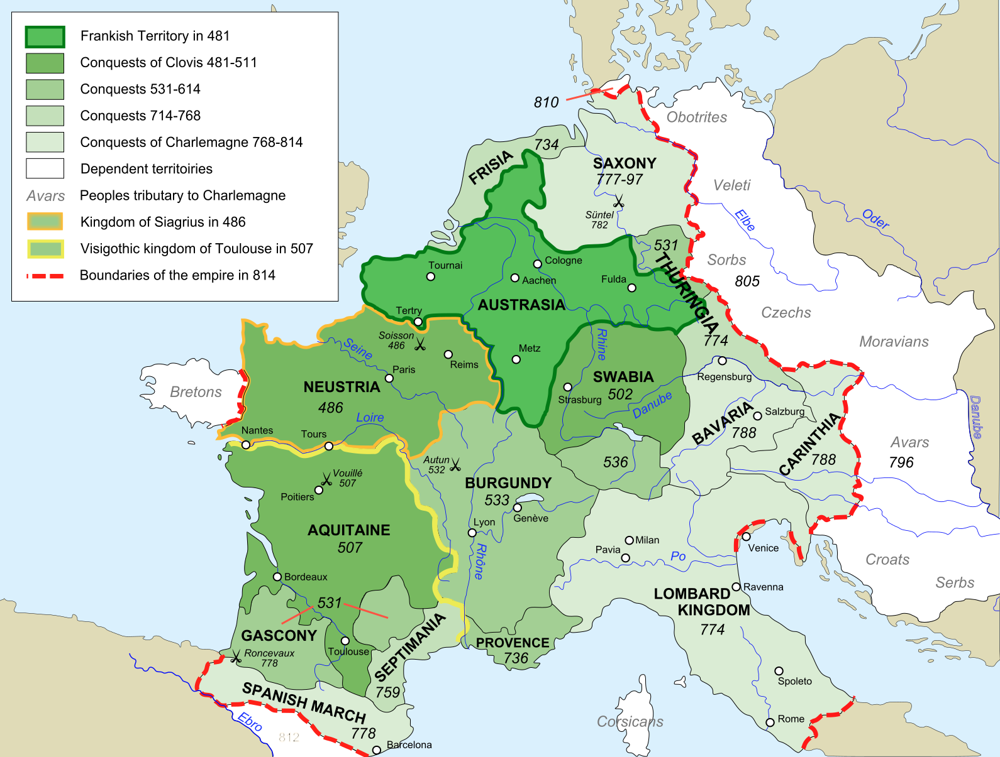
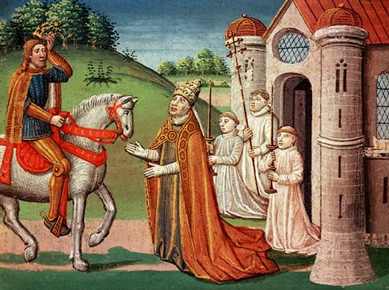
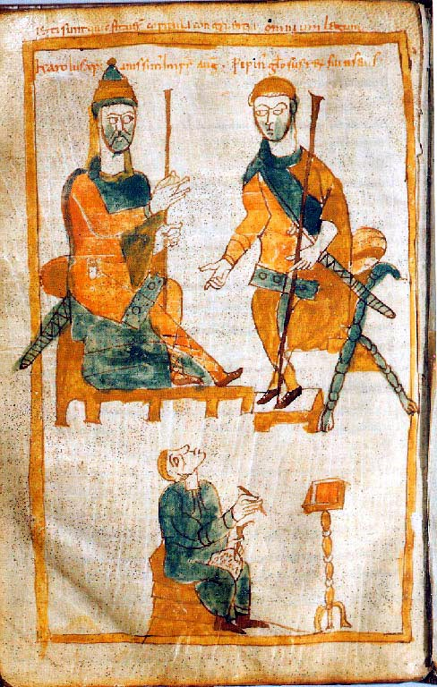
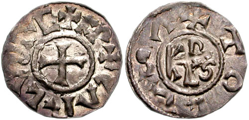
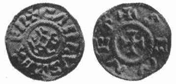
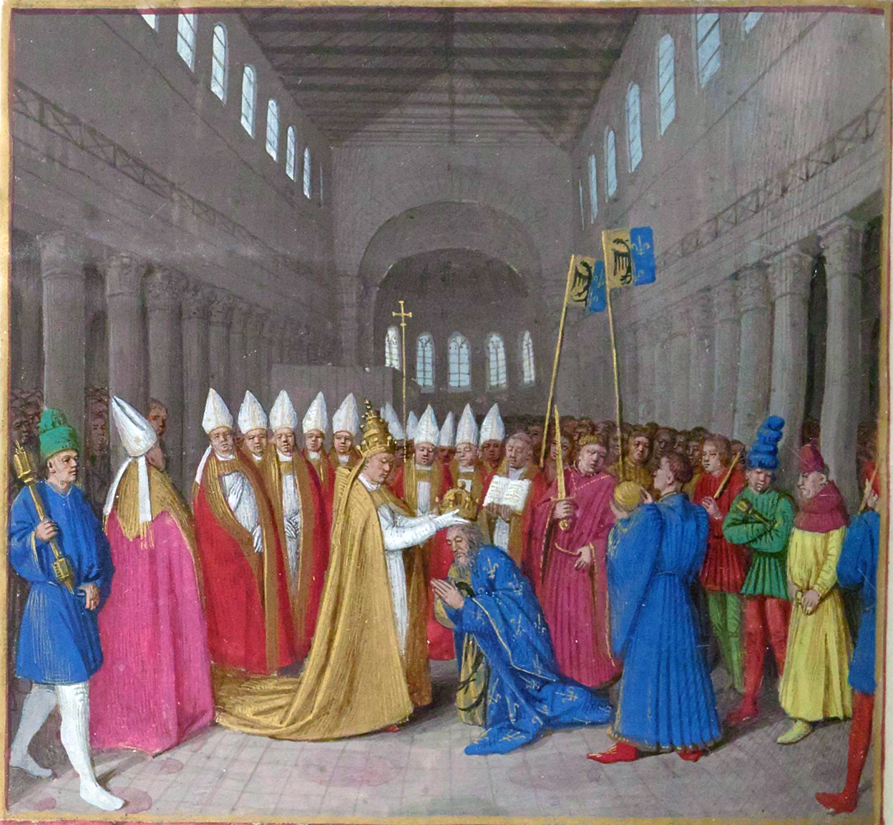
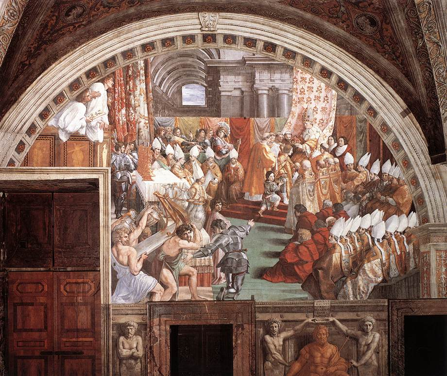
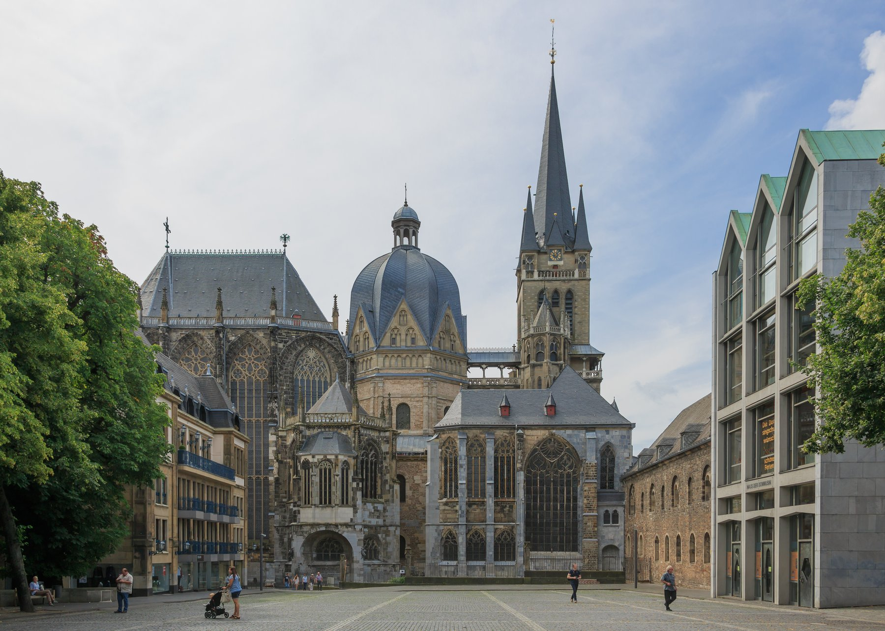
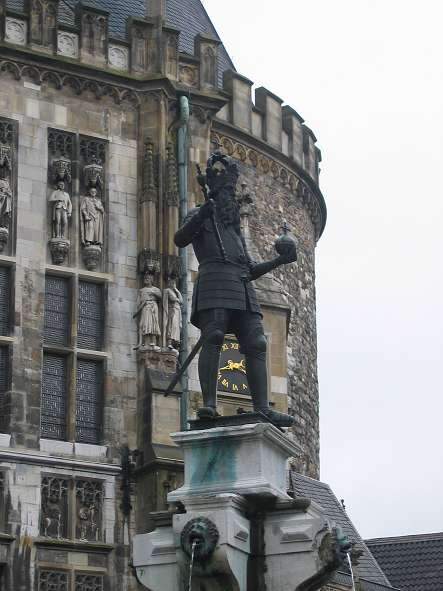
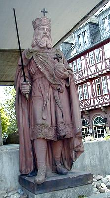

로마가 멸망한 지 삼백 년, 다시 한 사람이 서방에서 황제의 관을 쓰게 된다. 그의 이야기는 왕이 아니면서 왕국을 다스린 한 집안에서 시작된다.
800년 성탄절 아침, 로마의 성 베드로 대성당. 키 백구십 센티미터에 굵은 목, 형형한 눈빛의 거구가 제단 앞에 무릎을 꿇었다. 그 순간 교황 레오 3세가 뒤에서 다가와 황금 관을 그의 머리에 씌웠다. 성당을 메운 군중이 일제히 외쳤다. "신께서 관을 씌우신 위대하고 평화로운 로마인의 황제 카롤루스, 만세!" 서로마 제국이 476년에 무너진 뒤 삼백여 년 만에, 알프스 북쪽의 게르만족 왕이 로마 황제의 관을 쓴 것이다. 그러나 이 영광의 장면을 이해하려면, 우리는 그 거구가 태어나기 한 세대 전으로 돌아가야 한다.
우리는 그를 흔히 프랑스식 이름 '샤를마뉴'로 부른다. 라틴어 '카롤루스 마그누스', 곧 '카롤루스 대제'를 프랑스어로 옮긴 말이다. 독일인은 그를 '카를 데어 그로세', 카를 대제라 부른다. 한 사람을 두고 프랑스와 독일이 저마다 "우리의 시조"라 다투는 것 자체가, 그가 어떤 존재였는지를 말해준다. 그는 프랑스만의 왕도, 독일만의 왕도 아니었다. 그는 '유럽'이라는 관념이 태어나기 전, 그 관념의 자궁이 된 사람이었다.
카롤루스가 태어난 해는 정확하지 않다. 오랫동안 742년으로 알려졌으나, 근래 학자들은 748년경으로 본다. 출생일조차 분명치 않다는 것은, 그가 처음부터 왕자가 아니었음을 말해준다. 당시 프랑크를 다스리던 왕조는 메로빙거 가문이었다. 그러나 그 후손들은 이름뿐인 왕, 이른바 '게으른 왕들'로 전락해 있었다. 실권은 대대로 궁정의 집사장 자리, 곧 '궁재'를 세습한 카롤루스의 집안 — 카롤링거 가문이 쥐고 있었다.

프랑크 왕국의 성장, 481~814년 · 클로비스의 작은 왕국에서 시작해 카롤루스의 대제국에 이르기까지. 짙은 색일수록 나중에 더해진 땅이다.
카롤루스의 할아버지는 전설적인 인물이었다. 카를 마르텔. 732년, 그는 투르-푸아티에 전투에서 피레네를 넘어 밀려온 이슬람 군대를 격파했다. '마르텔'은 '망치'라는 뜻으로, 이 승리로 얻은 별명이었다. 후대 사람들은 그가 유럽을 이슬람으로부터 지켰다고 칭송했다. 오늘날 역사가들은 그 전투의 규모를 다소 줄여 보지만, 그 승리가 카롤링거 가문의 위신을 결정적으로 높인 것만은 분명하다. 망치의 손자, 그것이 카롤루스의 첫 번째 정체성이었다.
아버지는 피핀 3세, 별명은 '단신왕'(르 브레프)이었다. 그는 마침내 명목과 실질의 어긋남을 끝내기로 결심한다. 751년, 그는 교황에게 사람을 보내 물었다. "실권 없이 이름만 왕인 자와, 실권을 쥐고도 왕이 아닌 자 가운데 누가 진짜 왕이어야 합니까." 교황 자카리아는 답했다. "권력을 가진 자가 왕이라 불려야 마땅하다." 이 한마디에 힘입어 피핀은 마지막 메로빙거 왕 힐데리히 3세의 머리를 깎아 수도원으로 보내고, 스스로 프랑크의 왕이 되었다. 카롤링거 왕조의 시작이었다.
곁가지 하나 — 작은 아버지, 큰 아들
아버지 피핀의 별명 '르 브레프'는 '키가 작은'이라는 뜻으로 흔히 '단신왕'으로 옮긴다. 그런데 정작 그 아들 카롤루스는 당대 기준으로 거인이었다. 1861년 아헨에서 그의 유골을 측정한 결과 키가 약 백구십 센티미터에 달했다는 분석이 있다. 전기 작가 아인하르트도 그가 "보통 사람 키의 일곱 배 발 길이"였다고 적었다 — 즉 매우 컸다는 뜻이다. 작은 아버지에게서 큰 아들이 나온 셈이다. 다만 '단신왕'이라는 별명 자체가 후대에 붙은 것이어서, 실제 피핀의 키를 두고도 논란이 있다.
[Source] Einhard, Vita Karoli Magni 22; 아헨 대성당 유골 조사(1861).
곁가지 둘 — 글을 못 쓴 황제
유럽 문예부흥의 아버지로 불리는 이 사람은, 정작 자기 이름조차 제대로 쓰지 못했다. 아인하르트의 증언에 따르면, 그는 베개 밑에 밀랍 서판을 두고 밤마다 글씨 연습을 했지만 "너무 늦게 시작한 탓에" 끝내 능숙해지지 못했다. 그가 문서에 남긴 것은 자필 서명이 아니라, 자신의 이름 글자를 모은 도안 '모노그램'의 한 획을 긋는 것이 전부였다. 읽기는 했으되 쓰지는 못한 황제가, 유럽의 모든 학교의 기틀을 놓았다는 것은 역사의 깊은 아이러니다.
[Source] Einhard, Vita Karoli 25.
중국
카롤루스가 태어날 무렵, 당 현종의 치세는 절정을 지나고 있었다. 755년 안녹산이 난을 일으키며 당의 황금기가 무너지기 시작한다. 동서의 두 거대 제국이 거의 같은 시기에 다른 운명을 향해 갈라졌다.
이슬람
750년, 우마이야 왕조가 무너지고 아바스 왕조가 들어섰다. 762년 새 수도 바그다드가 건설되며 이슬람 문명의 중심이 다마스쿠스에서 동쪽으로 옮겨갔다. 그 도시의 한 칼리프가 훗날 카롤루스에게 코끼리를 보낸다.
카롤링거 가문의 부상은 한 세대의 우연이 아니라 백 년에 걸친 권력의 축적이었다. 카롤루스의 증조부 피핀 2세가 687년 테르트리 전투에서 경쟁 가문을 누르고 프랑크 전체의 궁재가 된 이래, 이 가문은 메로빙거 왕들을 허수아비로 세워둔 채 실질 권력을 대물림했다. 군대를 거느린 것도, 교회와 손잡은 것도, 변경의 부족들을 다스린 것도 모두 궁재의 몫이었다. 왕관만 남의 머리에 있었을 뿐이다. 751년 피핀 3세가 그 마지막 한 걸음을 내디뎠을 때, 그것은 혁명이 아니라 이미 굳어진 현실에 이름을 붙이는 일에 가까웠다.
카롤루스의 어린 시절에 대한 기록은 거의 없다. 아인하르트조차 "그의 출생과 유년에 대해서는 기록도 없고 그것을 아는 이도 살아 있지 않으니, 나는 그 부분을 건너뛰겠다"고 솔직히 적었다. 우리가 아는 것은 그가 아버지를 따라 일찍부터 전장과 궁정을 오갔고, 754년 교황의 방문 때 아버지의 명으로 교황을 마중하러 나갔다는 것 정도다. 위대한 인물의 유년이 안갯속에 있다는 사실 자체가, 그가 태어날 때만 해도 누구도 그를 '대제'로 예상하지 못했음을 말해준다.
곁가지 셋 — 이름 '카롤루스'와 '왕'이라는 단어
'카롤루스'(Carolus)는 게르만어로 '자유민, 사내'를 뜻하는 'karl'에서 왔다. 흥미로운 것은 그 반대다. 카롤루스가 워낙 위대했던 나머지, 그의 이름 자체가 여러 슬라브 언어에서 '왕'을 뜻하는 보통명사가 되었다. 폴란드어 '크룰'(król), 체코어 '크랄'(král), 러시아어 '코롤'(король)이 모두 그의 이름에서 나왔다. 한 사람의 이름이 한 단어가 되어, 동유럽 전체가 천이백 년 동안 '왕'을 부를 때마다 무심코 그의 이름을 불러온 셈이다.
[Source] 슬라브어 어원 연구; M. Vasmer, Russisches etymologisches Wörterbuch.
한 가지 더 짚을 것이 있다. 카롤링거 가문이 왕위를 '훔칠' 수 있었던 진짜 힘은 토지였다. 7세기 이래 이 가문은 프랑크 곳곳에 광대한 사유지를 모았고, 그 땅에서 나오는 부와 사람으로 사병을 길렀다. 중세 초의 권력이란 곧 '얼마나 많은 무장한 사람을 먹일 수 있는가'였다. 메로빙거 왕들이 이름만 남기고 시들어간 것은 게을러서가 아니라, 거듭된 분할상속으로 왕실 직할지가 쪼개져 사라졌기 때문이다. 카롤루스가 훗날 같은 분할상속의 함정에 제국을 빠뜨린다는 사실은, 역사의 쓰라린 반복이다.
곁가지 넷 — 프랑크라는 이름
'프랑크'(Frank)는 본래 라인강 하류에 살던 게르만 부족 연합의 이름이었다. 그 뜻을 두고는 '자유로운 자' 혹은 '용감한 자'라는 설이 있는데, 흥미롭게도 오늘날 영어의 'frank'(솔직한)와 'free'(자유로운)가 이 부족 이름과 얽혀 있다는 견해가 있다. 로마의 지배 아래에서 세금을 면제받은 프랑크인을 '자유민'이라 부른 데서 '자유롭다'는 뜻이 나왔다는 것이다. 그리고 이 부족의 이름이 그대로 한 나라의 이름이 되었다 — 프랑스(France). 카롤루스의 제국은 사라졌지만, 그 백성의 이름은 한 대국의 국호로 천이백 년을 살아남았다.
[Source] 게르만 부족명 어원 연구; 'Francia'의 국호화 과정.
카롤루스가 물려받은 세계는 로마의 폐허 위에 세워진 거친 땅이었다. 한때 백만 인구의 로마는 양치기가 폐허에서 가축을 치는 작은 마을로 쪼그라들었고, 옛 로마의 도로와 수도교는 무너져갔다. 도시는 시들고 화폐 경제는 위축되었으며, 글을 아는 이는 성직자뿐이었다. 서유럽 인구의 대부분은 숲과 늪 사이의 작은 마을에서 흙을 일구며 살았다. 바로 이 가라앉은 세계에서, 한 사람이 '로마를 다시 세운다'는 거대한 꿈을 품게 된다. 그가 마주한 것은 빛나는 유산이 아니라, 그 유산의 희미한 기억이었다.
II
754년 · 생드니
교황과의 결정적 만남
강의 듣기
한 교황이 알프스를 넘어와 한 가문에 기름을 부었다. 그 한 번의 의식이 유럽의 천 년을 결정했다.
피핀이 왕위를 찬탈한 것은 분명한 사실이었다. 메로빙거 왕조는 삼백 년을 이어온 정통이었고, 카롤링거는 그저 힘센 신하였다. 힘으로 왕관을 빼앗은 자에게 필요한 것은 단 하나, '정당성'이었다. 그리고 그 정당성을 줄 수 있는 유일한 권위가 그 무렵 알프스 너머에서 위기에 처해 있었다 — 로마의 교황이었다.
당시 이탈리아에는 게르만의 한 갈래인 롱고바르드 왕국이 있었다. 이들은 끊임없이 로마를 위협했고, 명목상의 보호자였던 동로마 황제는 멀리 콘스탄티노플에서 성상 파괴 논쟁에 빠져 교황을 돌볼 겨를이 없었다. 다급해진 교황 스테파노 2세는 754년, 교황으로서는 사상 처음으로 직접 알프스를 넘어 프랑크 땅으로 왔다. 그는 파리 근교 생드니 수도원에서 피핀과 그의 두 아들에게 손수 성유를 부었다.

왕과 교황 · 프랑크 왕가와 로마 교회의 동맹은 카롤루스 평생을 지탱한 두 기둥이었다. 그림은 후일 카롤루스와 교황 하드리아노 1세의 만남을 그린 중세 채색본.
이 '도유'(塗油), 곧 성유를 머리에 붓는 의식은 구약성서에서 예언자 사무엘이 다윗에게 기름을 부어 왕으로 세운 장면을 본뜬 것이었다. 이로써 프랑크 왕은 단순한 부족장이 아니라 '신이 택하고 교회가 보증한 왕'이 되었다. 여섯 살 무렵의 카롤루스는 그렇게, 아주 어린 나이에 이미 신성한 왕가의 일원으로 봉인되었다. 이날의 기름 한 방울이 그를 평생 '교회의 수호자'로 만들었다.
거래에는 대가가 따랐다. 피핀은 답례로 두 차례 군대를 이끌고 이탈리아로 내려가 롱고바르드를 무찌르고, 빼앗은 라벤나 일대의 땅을 교황에게 바쳤다. 이것이 훗날 천백 년을 이어진 교황령의 기원, 이른바 '피핀의 기증'이다. 세속의 칼과 종교의 십자가가 손을 잡은 이 순간이, 어린 카롤루스의 운명을, 그리고 유럽의 운명을 함께 결정했다.
곁가지 하나 — 위조된 한 문서
'피핀의 기증'은 훗날 교황권의 강력한 근거가 되었다. 그런데 그 무렵 교황청에는 더 대담한 문서가 떠돌았다. 4세기 콘스탄티누스 대제가 교황 실베스테르에게 서로마 전체의 통치권을 넘겼다는 '콘스탄티누스의 기증장'이다. 교황의 세속 지배를 정당화한 이 문서는, 700년 뒤인 1440년 인문학자 로렌초 발라가 문헌학적으로 분석해 후대의 위조임을 밝혀낸다. 카롤루스 시대에 시작된 교회와 세속 권력의 줄다리기가, 한 장의 가짜 문서를 낳을 만큼 절박했던 것이다.
[Source] Lorenzo Valla, De falso credita … Constantini donatione (1440); Liber Pontificalis.
비잔티움
동로마는 성상 파괴 논쟁으로 둘로 갈라져 싸우고 있었다. 황제가 성상 숭배를 금지하자 제국이 들끓었고, 로마 교황은 이를 이단으로 여겼다. 교황이 동방의 황제 대신 서방의 프랑크 왕에게 기댄 데에는, 이 신학 갈등이 깊이 깔려 있었다.
한반도
통일신라는 경덕왕 치세로, 불국사와 석굴암이 한창 조성되던 문화의 절정기를 지나고 있었다. 동방의 한 왕국이 돌로 부처의 미소를 새기던 그때, 서방의 한 왕가는 기름으로 왕권을 신성화하고 있었다.
754년의 도유는 한 번으로 끝나지 않았다. 교황 스테파노 2세는 같은 자리에서 한 걸음 더 나아가, 피핀과 그 두 아들을 '로마인의 귀족'(파트리키우스 로마노룸)으로 임명했다. 이는 본래 동로마 황제가 이탈리아 총독에게 내리던 칭호였다. 교황이 그 권한을 가로채 프랑크 왕에게 넘긴 것은, 사실상 "이제 로마의 보호자는 콘스탄티노플이 아니라 그대들"이라는 선언이었다. 800년 대관식의 씨앗은 이미 이 754년의 의식 속에 심겨 있었다.
피핀은 약속을 지켰다. 그는 756년 두 번째 이탈리아 원정에서 롱고바르드를 굴복시키고, 빼앗은 라벤나 총독령의 스물두 개 도시를 동로마 황제에게 돌려주지 않고 교황에게 바쳤다. 동로마 사절이 "그 땅은 본래 황제의 것"이라 항의하자, 피핀은 "나는 성 베드로의 사랑을 위해 싸웠을 뿐, 어떤 인간을 위해서도 싸우지 않았다"고 답했다고 전한다. 세속 군주가 종교적 명분을 정치의 언어로 삼은 이 장면은, 이후 천 년 유럽 정치의 문법이 되었다.
곁가지 둘 — 어머니 베르트라다
카롤루스의 어머니 베르트라다는 '큰 발의 베르타'라는 별명으로 중세 전설에 남았다. 한쪽 발이 유난히 컸다는 것이다. 그녀는 남편이 죽은 뒤에도 정치에 깊이 관여해, 두 아들의 화해를 주선하고 아들 카롤루스를 롱고바르드 공주와 혼인시키려 애썼다. 그러나 카롤루스는 어머니가 맺어준 그 정략결혼을 일 년 만에 깨고 공주를 친정으로 돌려보냈는데, 이 일이 롱고바르드 왕 데시데리우스와의 관계를 결정적으로 틀어지게 만들었다. 한 어머니의 외교가 한 아들의 변심으로 무너지며, 전쟁의 또 다른 불씨가 되었다.
[Source] Einhard, Vita Karoli 18; 중세 'Berte aus grans piés' 전설.
이슬람 에스파냐
756년, 아바스 왕조의 학살을 피해 달아난 우마이야 왕족 압드 알 라흐만 1세가 이베리아에 후우마이야 토후국을 세웠다. 교황과 프랑크가 동맹을 굳히던 바로 그 무렵, 피레네 너머에서는 또 하나의 독립 이슬람 왕국이 태어나 코르도바를 서방 최대의 도시로 키우기 시작했다.
흥미롭게도 이 동맹은 일방적인 시혜가 아니라 서로의 약점이 맞물린 거래였다. 교황은 군대가 없었고, 프랑크 왕은 정통성이 없었다. 한쪽은 칼을, 다른 쪽은 신의 보증을 가졌다. 둘이 손을 잡자 비로소 완전한 권력이 만들어졌다. 이 '칼과 십자가의 결합'은 이후 유럽 정치의 근본 구조가 되어, 황제와 교황이 서로를 필요로 하면서 동시에 서로를 견제하는 천 년의 긴장으로 이어진다. 754년 생드니의 기름 한 방울 속에, 중세 유럽의 모든 권력 다툼의 문법이 응축되어 있었다.
그(피핀)는 성 베드로의 사랑을 위하여, 그리고 자신의 죄를 사함받기 위하여 정복하였노라. 어떤 인간의 환심을 사기 위해 빼앗은 땅을 내어줄 수는 없다.
피핀 3세가 동로마 사절에게 한 답변 (『교황 행전』 전승)
'피핀의 기증'(754·756년)이 만들어낸 것은 단순한 영토가 아니라 하나의 정치적 발명품이었다. 교황이 세속의 땅을 직접 다스리는 군주가 된 것이다. 라벤나에서 로마에 이르는 이 교황령은 이후 1870년 이탈리아 통일까지 무려 천백여 년을 존속하며, 교황을 영적 지도자인 동시에 한 나라의 군주로 만들었다. 종교 권력이 세속 영토를 가진다는 이 독특한 구조가, 중세 내내 황제와 교황이 충돌하는 근본 원인이 된다. 어린 카롤루스가 곁에서 지켜본 그 거래는, 유럽 정치의 지형 자체를 새로 그렸다.
754년 생드니에서 시작된 '기름 부은 왕'의 전통은 카롤링거 가문을 넘어 유럽 전체로 퍼졌다. 이후 프랑스 왕들은 천 년 동안 랭스 대성당에서 성유로 축성받았고, 잉글랜드 왕의 대관식에서도 도유는 가장 신성한 절정으로 남았다 — 오늘날 영국 국왕의 즉위식에서 도유 순간만은 카메라조차 가리는 것이 그 흔적이다. 한 교황이 한 프랑크 왕가에 부은 기름 한 방울이, 유럽 왕권의 신성함을 천이백 년 동안 떠받친 셈이다. 권력에 '신이 택했다'는 옷을 입히는 이 의식의 힘을, 어린 카롤루스는 곁에서 똑똑히 배웠다.
III
768–774년 · 프랑크 왕국과 이탈리아
형제, 그리고 이탈리아의 왕관
강의 듣기
왕국은 둘로 나뉘었고 형제는 서로를 노려보았다. 운명이 한쪽을 거두어가자, 남은 한 사람이 알프스를 넘었다.
768년 아버지 피핀이 죽었다. 프랑크의 관습에 따라 왕국은 두 아들에게 똑같이 나뉘었다. 형 카롤루스가 외곽의 땅을, 동생 카를로만이 알짜배기 중심부를 받았다. 프랑크에는 로마처럼 '제국은 하나, 황제도 하나'라는 관념이 없었다. 왕국은 아버지의 재산이었고, 재산은 아들들에게 똑같이 갈라주는 것이 당연했다. 바로 이 분할상속의 관습이, 훗날 카롤루스가 평생 일군 제국을 그가 죽은 지 한 세대 만에 산산조각 낼 운명의 씨앗이었다.
두 형제는 곧바로 반목했다. 한 나라에 두 왕이 있으니 충돌은 시간문제였다. 그러나 내전이 터지기 직전, 운명이 개입했다. 771년, 동생 카를로만이 스무 살 무렵의 젊은 나이로 갑작스레 병들어 죽은 것이다. 카롤루스는 망설이지 않았다. 그는 죽은 동생의 영토를 즉시 차지하고, 동생의 어린 두 아들과 그 어머니를 권력에서 밀어냈다. 조카들의 권리는 깨끗이 무시되었다. 카를로만의 미망인은 아이들을 데리고 이탈리아의 롱고바르드 왕에게로 달아났다. 이 망명이 곧 다음 전쟁의 불씨가 된다.
이제 프랑크 왕국 전체가 한 사람의 손에 들어왔다. 스물세 살 무렵의 카롤루스는 광대한 왕국과 강력한 군대, 그리고 끝없는 야심을 손에 쥐었다. 그리고 그의 발목을 잡는 한 가지 빚이 남아 있었다. 망명한 조카들을 품은 롱고바르드 왕 데시데리우스가, 그 아이들을 프랑크 왕으로 옹립하라며 교황을 압박하기 시작한 것이다.
교황 하드리아노 1세는 거부하고 도리어 카롤루스에게 구원을 요청했다. 명분과 실리가 맞아떨어졌다. 773년, 카롤루스는 대군을 이끌고 알프스를 넘었다. 데시데리우스는 수도 파비아에 틀어박혀 농성했다. 카롤루스는 도시를 포위한 채 봄을 기다렸고, 그사이 부활절에 로마로 내려가 아버지가 한 '기증'을 더 크게 확인해주었다. 774년, 마침내 파비아가 함락되었다. 카롤루스는 정복한 적의 왕국을 해체하지 않고, 스스로 '롱고바르드인의 왕'을 칭하며 그 왕관을 자신의 머리에 더했다. 한 사람이 두 민족의 왕이 된 것, 이것이 장차 그가 '황제'가 될 길을 닦았다.

두 왕관을 쓴 자 · 카롤루스는 정복한 이탈리아를 직접 다스리지 않고, 훗날 아들 피핀을 '이탈리아의 왕'으로 세웠다. 그림은 카롤루스와 이탈리아 왕 피핀.
곁가지 하나 — 사라진 조카들
카를로만의 어린 두 아들은 역사에서 흔적도 없이 사라졌다. 어머니 게르베르가가 그들을 데리고 데시데리우스에게 의탁한 뒤, 카롤루스가 이탈리아를 정복했을 때 그들이 어떻게 되었는지에 대한 기록은 끊긴다. 권력 앞에서 핏줄도 안전하지 못했던 시대의 어둠을, 이 침묵이 웅변한다.
[Source] Einhard, Vita Karoli 3; Annales regni Francorum 771.
곁가지 둘 — 철관과 롬바르디아
롱고바르드의 '철관'은 지금도 이탈리아 몬차 대성당에 보관되어 있다. 안쪽에 가느다란 철테가 둘려 있는데, 전승은 이를 그리스도의 십자가 못이라 한다. 카롤루스부터 나폴레옹까지 여러 군주가 이 관으로 이탈리아 왕위를 주장했다. 또한 오늘날 이탈리아 북부의 부유한 공업 지대 '롬바르디아'(밀라노가 중심이다)는 바로 이 롱고바르드족에서 온 이름이다. 천이백 년 전 카롤루스가 정복한 게르만 부족이 지명으로 살아남은 것이다.
[Source] Paul the Deacon, Historia Langobardorum; 몬차 대성당 철관(Corona Ferrea).
일본
나라 시대 말기. 거대한 도다이지 대불(752년 개안)이 완성된 지 얼마 되지 않았고, 율령 국가의 틀이 자리 잡고 있었다. 794년에는 헤이안(교토)으로 천도해 새 시대를 연다 — 공교롭게도 카롤루스의 전성기와 거의 같은 시기였다.
이슬람 에스파냐
코르도바를 중심으로 후우마이야 왕조가 번성했다. 카롤루스에게는 남쪽의 또 다른 강적이었고, 곧 그를 피레네 너머의 비극으로 이끈다.
형제의 갈등에는 까닭이 있었다. 768년의 분할은 단순히 땅을 절반으로 가른 것이 아니라, 두 영토가 서로 맞물리도록 일부러 어긋나게 그어졌다. 아버지 피핀이 두 아들 중 누구도 독립하지 못하도록, 서로를 견제하게 만든 설계였다는 해석이 있다. 실제로 769년 아키텐에서 반란이 일어났을 때, 동생 카를로만은 형의 출병 요청을 냉정히 거절했다. 카롤루스는 홀로 반란을 진압했고, 이 사건으로 그는 동생을 결코 신뢰할 수 없는 존재로 여기게 되었다.
771년 카를로만의 갑작스러운 죽음은 카롤루스에게는 하늘이 내린 행운이었다. 그러나 그 행운을 그는 냉혹하게 거머쥐었다. 동생이 죽자 카를로만의 신하들 가운데 일부는 어린 조카를 새 왕으로 옹립하려 했으나, 카롤루스는 단 며칠 만에 동생의 영토를 접수하고 그 신하들의 충성을 받아냈다. 망설임 없는 속도가 그의 평생을 특징짓는다. 기회가 왔을 때 그는 결코 머뭇거리지 않았다 — 그것이 야심이든 잔혹함이든.
이탈리아 정복은 단순한 군사 작전이 아니라 정교한 외교의 산물이었다. 카롤루스는 알프스의 두 길로 군대를 나누어 보내 데시데리우스의 방어를 분산시켰고, 롱고바르드 귀족들을 매수해 내부에서 무너뜨렸다. 파비아가 굶주림 끝에 항복하자, 그는 패왕 데시데리우스를 죽이지 않고 프랑크의 수도원에 가두는 것으로 마무리했다. 적을 완전히 절멸시키기보다 무력화하여 흡수하는 이 방식은, 그가 정복한 수많은 민족을 제국에 통합하는 일관된 원칙이 된다.
곁가지 셋 — 알프스를 넘은 군대
773년 카롤루스의 알프스 횡단은 한니발과 나폴레옹의 그것에 비견되는 위업이었다. 데시데리우스가 좁은 협곡을 막아서자, 프랑크군은 험준한 산길로 우회해 적의 배후로 나타났다. 전하는 바로는, 한 음유시인이 산 위에서 다가오는 프랑크 대군을 보고 데시데리우스에게 "철의 왕이 옵니다, 철이 들판을 덮습니다"라고 거듭 외쳤다 한다. 데시데리우스는 그 '철'을 보고 싸우기도 전에 전의를 잃었다. 카롤루스의 군대가 유럽에 안긴 것은 무력만이 아니라, 그 무력에 대한 공포였다.
[Source] Notker, Gesta Karoli II; Annales regni Francorum 773–774.
이탈리아 정복 직후 카롤루스는 처음으로 로마 땅을 밟았다. 774년 부활절, 그는 성 베드로 대성당의 계단을 무릎으로 기어올라 한 단 한 단 입을 맞추며 올랐다고 전한다. 정복자의 위세가 아니라 순례자의 겸손으로 로마에 들어선 것이다. 그 자리에서 그는 아버지 피핀의 기증을 문서로 다시 확인하고, 교황령의 경계를 더 넓혀 약속했다. 이 장면은 그가 단순한 군벌이 아니라 '교회의 수호자'라는 역할을 얼마나 진지하게 받아들였는지를 보여준다 — 그 역할이 26년 뒤 그를 황제의 자리로 이끈다.
파비아 포위전은 카롤루스의 인내를 보여주는 전형이었다. 774년 봄까지 무려 아홉 달을 그는 도시를 굶주리게 했다. 성안에서는 역병과 기근이 돌았고, 마침내 데시데리우스가 성문을 열었다. 카롤루스는 그를 죽이지 않고 프랑크의 코르비 수도원에 보내 여생을 수도사로 마치게 했다. 그리고 자신은 롱고바르드의 전통 의식에 따라 '철관'을 쓰고 '롱고바르드인의 왕'을 선포했다. 한 사람이 알프스 남북, 곧 게르만 세계와 옛 로마의 심장부를 동시에 다스리게 된 것은, 서로마 멸망 이후 처음 있는 일이었다. 황제로 가는 길이 이때 사실상 닦였다.
카롤루스의 정복은 남쪽 이탈리아에서 그치지 않았다. 788년 그는 마지막 남은 대공국 바이에른을 병합했다. 사촌이기도 한 바이에른 대공 타실로 3세가 충성 서약을 거듭 어기자, 카롤루스는 그를 반역죄로 폐위해 수도원에 가두고 그 땅을 직접 다스렸다. 이로써 프랑크 안의 마지막 독립 세력이 사라졌다. 이어 791년부터는 도나우강 너머의 유목민 아바르족을 공격해, 그들이 이백 년간 쌓아온 막대한 보물을 노획했다. 짐수레 열다섯 대 분량의 금은이 아헨으로 실려 왔다 전한다. 동쪽 변경까지 뻗은 이 정복으로, 프랑크 왕국은 마침내 '제국'이라 불릴 만한 크기에 이르렀다.
Tabula I · 프랑크 왕국 768년
카롤루스가 물려받은 땅 — 그리고 동생과 나눈 분할
카롤루스의 몫 카를로만의 몫 미정복 이웃
프랑크 왕국은 한 덩어리가 아니라 형제가 똑같이 나눈 '재산'이었다. 분할상속이라는 게르만의 관습은 카롤루스 평생의 통일과, 그가 죽은 뒤의 분열을 동시에 설명하는 열쇠다.
IV
772–804년 · 삭센
삭센의 삼십 년 전쟁
강의 듣기
한 사람을 평생 따라다닌 전쟁, 그리고 영광 뒤에 드리운 가장 짙은 그림자.
카롤루스의 정복 가운데 가장 길고 가장 잔혹했던 것이 삭센(작센) 전쟁이었다. 772년에 시작되어 804년까지, 무려 삼십이 년에 걸쳐 단속적으로 이어졌다. 그의 치세 거의 전부를 차지한 셈이다. 상대인 삭센족은 라인강 동쪽의 게르만 부족으로, 왕도 도시도 없이 숲과 늪에 흩어져 살며 옛 게르만의 신들을 섬기는 이교도였다.
전쟁의 명분은 둘이었다. 하나는 끊임없는 국경 약탈을 막는 것, 다른 하나는 그들을 기독교로 개종시키는 것이었다. 카롤루스에게 정복과 선교는 한 몸이었다. 772년 그는 삭센족의 성소를 공격해, 그들이 우주를 떠받친다고 믿은 거대한 신목(神木) 이르민술을 베어 넘어뜨렸다. 하늘이 무너지지 않자 삭센족의 신앙도 흔들렸다.
그러나 삭센족에게는 비두킨트라는 걸출한 지도자가 있었다. 카롤루스가 군대를 이끌고 들어오면 숲으로 몸을 숨겼다가, 그가 다른 전선으로 떠나면 다시 일어나 프랑크의 요새와 교회를 불태웠다. 정복과 봉기, 개종과 배교가 끝없이 되풀이되었다. 인내심 강한 카롤루스도 분노했다.
782년, 그 분노가 끔찍한 형태로 터졌다. 프랑크 군대가 쥔트엘 산에서 매복에 걸려 참패하자, 카롤루스는 보복에 나섰다. 베르덴에서 그는 반란에 가담한 삭센족 포로 사천오백 명을 하루에 처형했다고 전해진다. 이른바 '베르덴의 학살'이다. 유럽의 아버지라는 영광 뒤에 가장 짙게 드리운 핏빛 그림자였다.
그는 이 전쟁을 너무도 끈질기게 수행하여, 자신이 제시한 조건 — 곧 그들이 기독교 신앙을 받아들이고 프랑크인과 한 백성이 되는 것 — 을 그들이 마침내 받아들일 때까지 멈추지 않았다.
아인하르트, 『카롤루스 대제의 생애』 7장
곁가지 하나 — 4500명, 사실일까
베르덴의 사천오백 명이라는 숫자는 『프랑크 왕국 연대기』에 적혀 있다. 그러나 일부 학자들은 라틴어 '데콜라비트'(목을 베다)가 필사 과정에서 '델로카비트'(이주시키다)의 오기일 가능성을 제기한다. 즉 처형이 아니라 강제 이주였을 수 있다는 것이다. 진실은 알 수 없다. 다만 이 사건이 카롤루스의 잔혹함을 상징하는 이야기로 천이백 년을 살아남았다는 사실 자체가, 정복의 대가가 어떤 것이었는지를 말해준다. 20세기 나치 독일은 비두킨트를 게르만 저항의 영웅으로, 카롤루스를 '삭센의 도살자'로 선전하기도 했다.
[Source] Annales regni Francorum 782; 베르덴 학살의 역사성 논쟁(현대 사학).
곁가지 둘 — 칼로 강요한 세례
카롤루스가 삭센족에게 내린 '삭센 칙령'은 섬뜩했다. 세례를 거부하거나, 이교의 제사를 지내거나, 사순절에 고기를 먹는 삭센인은 사형에 처한다는 내용이었다. 신앙을 칼로 강요한 이 법은 너무 가혹해, 훗날 카롤루스의 자문관 알퀸조차 "믿음은 강요할 수 없고 설득해야 한다"며 완화를 호소했다. 결국 더 온건한 법으로 대체된다. 강요된 개종의 한계를 당대인도 알고 있었던 것이다.
[Source] Capitulatio de partibus Saxoniae; 알퀸의 서한.
긴 전쟁은 결국 카롤루스의 승리로 끝났다. 785년, 지도자 비두킨트가 마침내 항복하고 세례를 받았다. 카롤루스가 직접 그의 대부가 되어주었다. 804년, 마지막 저항이 진압되며 삭센은 완전히 프랑크 제국에, 그리고 기독교 세계에 편입되었다. 오늘날 독일의 그리스도교화는 이 잔혹한 삼십 년 전쟁에 뿌리를 두고 있다.
이슬람
786년 하룬 알 라시드가 아바스 칼리프에 오른다. 바그다드는 인구 백만에 육박하는 세계 최대 도시였고, '지혜의 집'에서 그리스 철학이 아랍어로 번역되고 있었다. 유럽이 숲에서 이교도를 베는 동안, 바그다드는 아리스토텔레스를 읽고 있었다.
인도
벵골을 중심으로 팔라 왕조가 번영하며 불교를 후원했다. 날란다 대학이 세계 각지의 승려를 끌어모으던 시기였다.
삭센 전쟁이 왜 그토록 길었는지를 이해하려면, 삭센 사회의 구조를 보아야 한다. 삭센에는 항복을 명령할 왕이 없었다. 그들은 매년 한 차례 마르클로 평원에 모여 합의로 일을 정하는, 느슨한 부족 연합이었다. 카롤루스가 한 지역의 귀족들을 굴복시켜도, 다른 지역은 그 항복에 구속되지 않았다. 머리를 베어도 또 다른 머리가 솟는 히드라와 싸우는 셈이었다. 그가 결국 택한 해법은 군사적이라기보다 사회공학적이었다. 삭센의 지배층 수천 가구를 제국 곳곳으로 강제 이주시켜 공동체 자체를 해체한 것이다.
개종은 칼끝에서 이루어졌다. 카롤루스는 정복지마다 교회와 수도원을 세우고 십일조를 강제했으며, 새로 임명된 주교들이 무력의 보호 아래 세례를 베풀었다. 코르바이, 파더보른, 브레멘 같은 도시가 이때 삭센 땅의 기독교 거점으로 세워졌다. 흥미롭게도 한두 세대 뒤, 이 강제 개종된 삭센 땅에서 가장 열렬한 기독교 문화가 꽃핀다. 9세기의 서사시 『헬리안트』는 예수를 게르만 부족장처럼, 사도들을 그의 충직한 전사들처럼 묘사했다 — 강요된 신앙이 토착 문화와 뒤섞여 전혀 새로운 것을 낳은 것이다.
곁가지 셋 — 비두킨트, 패자의 부활
785년 세례를 받고 역사에서 사라진 비두킨트는, 정작 죽어서 더 큰 인물이 되었다. 후대 삭센 지방에서 그는 영웅으로 추앙되었고, 신성로마제국의 여러 가문이 그를 시조로 자처했다. 19세기 독일 민족주의는 그를 '게르만 자유의 화신'으로 떠받들었고, 20세기 나치는 그를 기리는 한편 카롤루스를 '게르만을 학살한 자'로 비난했다. 그러나 또 다른 나치 분파는 정반대로 카롤루스를 '제1제국의 창건자'로 찬양했다. 한 정복 전쟁의 승자와 패자가, 천이백 년 뒤 같은 이데올로기 안에서 서로 충돌하는 상징이 되었다.
[Source] H. Beumann, "Die Hagiographie 'bewältigt'"; 나치의 카롤루스 논쟁 연구.
삭센 전쟁 요약
기간772–804년 (약 32년, 18차례 원정)
분기점772 이르민술 파괴 · 782 베르덴 · 785 비두킨트 항복
결과삭센의 프랑크 제국 편입 및 기독교화
유산오늘날 독일 북부 그리스도교화의 기원
삭센 전쟁은 카롤루스의 군사 체계가 어떻게 작동했는지도 보여준다. 프랑크군의 핵심은 자비로 말과 갑옷을 갖춘 중무장 기병이었고, 이들을 동원하려면 봄마다 소집령을 내려 귀족들을 불러야 했다. 그래서 원정은 농한기인 늦봄에 시작해 가을걷이 전에 끝나야 했고, 겨울이면 정복지는 다시 봉기했다. 삭센이 삼십 년을 버틴 데에는 이 '계절의 한계'도 한몫했다. 카롤루스는 결국 정복지에 상주 요새를 짓고 겨울에도 군대를 주둔시키는 방식으로 이 한계를 넘어섰다 — 점령의 기술이 한 단계 진화한 것이다.
세례받기를 거부하고 이교도로 남아 숨으려는 자는 사형에 처한다. 사순절에 고기를 먹는 자, 죽은 자를 화장하는 자, 인신을 제물로 바치는 자도 죽음으로 다스린다.
『삭센 칙령』(Capitulatio de partibus Saxoniae, 782년경)
이 칙령의 잔혹함은 당대에도 논란이었다. 알퀸은 황제에게 보낸 편지에서 "믿음은 자유로운 의지의 일이지 강제의 일이 아니며, 세례는 줄 수 있어도 신앙은 줄 수 없다"고 간언했다. 사람은 십일조의 무게에 짓눌려서가 아니라 설득으로 신자가 된다는 것이었다. 이 비판이 받아들여져, 797년 더 온건한 새 칙령이 옛 칙령을 대체했다. 정복자조차 자기 방식의 한계를 인정해야 했던 셈이다. 강요된 신앙의 역설은, 천이백 년 뒤 종교의 자유를 고민하는 우리에게도 여전히 묵직한 질문을 던진다.
삭센 너머에는 또 다른 세계가 있었다. 엘베강 동쪽에는 슬라브 부족들이 살았고, 카롤루스는 이들과 동맹과 정벌을 오가며 제국의 동쪽 울타리를 다졌다. 그는 정복한 삭센 땅에 변경 백작령을 세우고 요새와 교회를 촘촘히 박아, 다시는 봉기가 일어나지 못하도록 했다. 가장 저항이 거셌던 북부 노르달빙기엔에서는 주민을 통째로 남쪽으로 이주시키고 그 자리에 충성스러운 슬라브 부족을 옮겨 심기까지 했다. 한 부족을 뿌리째 옮겨 저항의 토양 자체를 갈아엎는 이 방식은 잔혹했으나 효과적이었다 — 카롤루스 이후 삭센은 다시는 반란을 일으키지 않았고, 오히려 제국의 충실한 일부가 되었다.
V
778년 8월 15일 · 피레네 론세보 고개
론세보의 통한, 롤랑의 노래
강의 듣기
한 번의 작은 패배가, 중세 유럽이 가장 사랑한 영웅 서사시가 되었다.
778년, 카롤루스는 처음이자 거의 유일한 큰 실패를 맛본다. 무대는 이슬람 치하의 에스파냐였다. 무슬림 영주들 사이의 내분을 틈타 그는 피레네를 넘어 사라고사로 진격했다. 그러나 성문은 열리지 않았고, 원정은 성과 없이 끝났다. 회군하던 길, 카롤루스의 운명이 갈렸다.
군대가 피레네의 좁은 론세보(롱스보) 고개를 넘던 8월의 어느 날, 후미를 맡은 부대가 산속에서 기습을 당했다. 좁은 길에 늘어선 프랑크군은 위에서 쏟아지는 공격에 속수무책이었다. 후위대가 전멸했고, 그 지휘관 가운데 브르타뉴 변경백 흐로드란드, 곧 후세의 '롤랑'이 있었다.
역사적 진실은 소박하다. 기습한 것은 이슬람군이 아니라 같은 기독교도인 바스크인이었다. 자기네 산을 짓밟고 지나간 데 대한 보복, 그리고 약탈이 목적이었다. 규모도 그리 크지 않았다. 아인하르트조차 이 패배를 짧게, 마지못해 기록했다. 그러나 바로 이 작은 비극이, 삼백 년 뒤 유럽 문학사상 가장 위대한 무훈시로 다시 태어난다.
11세기 말에 완성된 『롤랑의 노래』에서, 역사는 신화가 되었다. 기습한 바스크인은 수십만 이슬람 대군으로 바뀌었고, 롤랑은 끝까지 싸우다 장렬히 전사하는 기사도의 화신이 되었다. 그는 자존심 때문에 뿔나팔 불기를 미루다, 동료가 다 죽은 뒤에야 피를 토하며 나팔을 불어 황제에게 위험을 알린다. 한 번의 패배가, 십자군 시대 유럽인의 가슴을 뛰게 한 영웅 서사가 된 것이다.
높은 산, 어두운 골짜기, 검은 바위, 무서운 협곡. … 롤랑은 올리판트를 입에 대고, 힘껏, 온 힘을 다해 불었다. 산봉우리는 높고, 그 소리는 멀리, 삼십 리 밖에서도 메아리쳤다.
『롤랑의 노래』 (11세기 말, 고대 프랑스어 무훈시)
곁가지 하나 — 정복왕에게 들이댄 노래
전승에 따르면 1066년 헤이스팅스 전투에서 노르만 음유시인 타유페르가 『롤랑의 노래』를 부르며 선두에서 돌격해 전사했다고 한다. 사실 여부는 불분명하지만, 이 일화는 그 노래가 중세 전사들에게 얼마나 큰 용기의 원천이었는지를 보여준다. 카롤루스의 한 작은 패배가, 수백 년 뒤 전쟁터의 군가가 된 셈이다.
[Source] Wace, Roman de Rou; Chanson de Roland 연구.
곁가지 둘 — 에스파냐 변경(마르카 히스파니카)
론세보의 패배가 전부는 아니었다. 카롤루스는 이후 피레네 남쪽에 완충 지대인 '에스파냐 변경'을 세웠다. 801년 그의 아들 루이가 바르셀로나를 점령하면서, 이 지역은 이슬람 세계와 기독교 세계가 맞닿는 국경이 되었다. 훗날 이곳에서 카탈루냐가 자라난다. 한 번의 패배로 기억되는 원정이, 실은 한 지역의 천 년 정체성을 빚어낸 셈이다.
[Source] Annales regni Francorum 801; 카탈루냐 기원 연구.
이슬람
카롤루스가 사라고사 앞에서 발길을 돌린 그 무렵, 이베리아의 후우마이야는 코르도바 대모스크를 짓기 시작했다(785년). 유럽이 산속에서 매복에 무너지는 동안 안달루스는 도서관과 모스크의 도시를 세우고 있었다.
비잔티움
780년 여제 이레네가 어린 아들을 대신해 섭정에 오른다. 훗날 '제위가 비어 있다'는 이 상황이, 카롤루스의 황제 즉위에 묘한 빌미를 제공한다.
론세보 원정의 진짜 동기는 종교 전쟁이 아니라 기회주의였다. 778년 사라고사의 무슬림 총독을 비롯한 몇몇 영주가, 코르도바의 후우마이야에 맞서 카롤루스에게 도움을 청한 것이다. 이슬람 세력 내부의 분열을 틈탄 진출이었다. 그러나 막상 도착하니 사라고사는 성문을 열지 않았고, 카롤루스는 빈손으로 회군해야 했다. 그가 회군길에 기독교 도시 팜플로나의 성벽을 헐어버린 것이, 바스크인의 분노에 기름을 부었다. 론세보의 매복은 종교의 충돌이 아니라, 짓밟힌 산악민의 복수였다.
『롤랑의 노래』가 역사를 어떻게 비틀었는지는 그 자체로 한 편의 드라마다. 실제로는 이름조차 희미한 한 변경백의 죽음이, 삼백 년의 구전을 거치며 십자군 시대의 종교적 열망을 옷처럼 입었다. 적은 바스크인에서 사라센으로 바뀌고, 작은 매복은 우주적 선악의 대결이 되었으며, 롤랑의 죽음은 그리스도의 수난을 닮은 순교가 되었다. 한 시대는 과거의 사실을 기억하는 것이 아니라, 자신이 필요로 하는 과거를 발명한다 — 『롤랑의 노래』는 그 사실을 가장 선명하게 보여주는 증거다.
곁가지 셋 — 올리판트와 뒤랑달
『롤랑의 노래』가 남긴 두 물건은 유럽 문화의 영원한 상징이 되었다. 롤랑의 상아 뿔나팔 '올리판트'와 그의 명검 '뒤랑달'이다. 전설에 따르면 뒤랑달의 손잡이에는 성 베드로의 이빨, 성 바실리오의 피, 성모의 옷자락이 들어 있었다. 죽어가는 롤랑은 검이 적의 손에 넘어가지 않도록 바위에 내리쳤으나, 검은 부러지지 않고 바위가 갈라졌다 한다. 프랑스 남부 로카마두르의 절벽에는 지금도 바위에 박힌 칼이 '뒤랑달'이라는 이름으로 관광객을 맞는다 — 노래가 만들어낸 물건이 실재하는 유물이 된 셈이다.
[Source] Chanson de Roland; 로카마두르 전승.
론세보의 패배는 카롤루스에게 값진 교훈을 남겼다. 그는 이후 두 번 다시 이베리아 깊숙이 무모하게 진격하지 않았다. 대신 피레네 남쪽에 헤로나, 우르헬, 바르셀로나로 이어지는 요새 띠를 차근차근 쌓아, 이슬람 세계와의 사이에 두꺼운 완충 지대를 만들었다. 한 번의 화려한 정복보다 꾸준한 방어선 구축이 더 오래 간다는 것을 그는 배웠다. 패배에서 배우는 능력 — 그것이 무모한 정복자와 위대한 통치자를 가르는 경계였다.
『롤랑의 노래』가 십자군의 노래가 되었다는 사실은 의미심장하다. 실제 778년의 적은 같은 기독교도 바스크인이었지만, 11세기의 시인은 그들을 이슬람 대군으로 바꿔놓았다. 왜였을까. 그 시가 완성된 시점이 바로 제1차 십자군(1096년) 전후였기 때문이다. 유럽이 동방 원정에 나서며 '기독교 대 이슬람'의 서사를 필요로 하던 그때, 삼백 년 전의 작은 매복이 거룩한 전쟁의 신화로 다시 쓰였다. 과거는 늘 현재의 필요에 따라 다시 색칠된다 — 한 편의 무훈시가 그 진실을 가장 선명히 증언한다.
곁가지 셋 — 열두 용사(Paladin)
『롤랑의 노래』에서 카롤루스를 호위하는 열두 명의 최정예 기사를 '팔라딘'(Paladin)이라 부른다. 이 말은 로마 황제의 궁전이 있던 '팔라티노 언덕'에서 나왔다. 롤랑, 올리비에, 대주교 튀르팽 같은 이 열두 용사는 아서왕의 원탁의 기사들과 더불어 중세 기사도 문학의 두 기둥이 되었고, 오늘날 '팔라딘'은 판타지 게임 속 성스러운 전사의 이름으로 살아 있다. 한 번의 패배에서 태어난 이야기가, 천 년을 건너 오늘의 상상력에까지 닿아 있다.
[Source] Chanson de Roland; 'paladin' 어원(palatinus).
론세보 고개는 오늘날에도 순례자들이 넘는 길이다. 산티아고 데 콤포스텔라로 향하는 '카미노'의 프랑스 길이 바로 이 피레네의 고개를 지난다. 천이백 년 전 프랑크 후위대가 전멸한 그 좁은 골짜기를, 지금은 해마다 수십만 순례자가 지팡이를 짚고 넘는다. 죽음의 매복지가 영적 순례의 관문이 된 것이다. 역사의 한 장소가 어떻게 전혀 다른 의미로 다시 태어나는지를, 이 고개만큼 잘 보여주는 곳도 드물다 — 패배의 기억과 순례의 평화가 같은 흙 위에 겹쳐 있다.
Tabula II · 정복 전쟁 772–804년
사방으로 뻗어나간 칼 — 삭센·이탈리아·에스파냐·아바르
원정로 주요 전투 제국 최대 판도
서로는 에스파냐 변경, 동으로는 아바르의 헝가리 평원, 북으로는 삭센, 남으로는 로마까지. 카롤루스는 평생 오십여 차례 원정을 치르며 서유럽의 절반을 하나의 깃발 아래 묶었다. 796년 아바르 정복으로 얻은 막대한 황금은 제국의 금고를 가득 채웠다.
VI
781–800년 · 아헨
알퀸과 카롤링거 르네상스
강의 듣기
칼로 정복한 제국을, 그는 펜으로 다스리려 했다. 유럽의 학교는 그의 궁정에서 시작되었다.
카롤루스는 단순한 정복자가 아니었다. 그는 광대한 제국을 다스리려면 글을 읽고 쓰는 사람, 곧 행정과 교회를 떠받칠 인재가 필요하다는 것을 알았다. 그런데 오랜 전란 속에 서유럽의 라틴어는 무너지고, 성직자조차 성경을 제대로 읽지 못하는 지경이었다. 그래서 그는 유럽 전역에서 가장 뛰어난 학자들을 아헨의 궁정으로 불러 모았다. 이 문화 부흥 운동을 후대는 카롤링거 르네상스라 부른다.
그 중심에 잉글랜드 요크 출신의 수도사 알퀸이 있었다. 카롤루스는 781년 이탈리아에서 그를 만나 아헨으로 데려왔다. 알퀸은 궁정 학교를 세우고, 황제 자신과 그 자녀들, 귀족과 성직자에게 라틴어 문법과 수사학, 논리학, 천문학을 가르쳤다. 황제는 마흔이 넘은 나이에도 학생이 되어 밤마다 밀랍 서판에 글씨를 연습했다. '7자유학예'를 중심으로 한 이 교육 과정이, 훗날 유럽 대학의 뿌리가 된다.
황제의 모노그램 · 카롤루스는 자기 이름 글자(KAROLVS)를 십자 모양으로 엮은 도안을 썼다. 글을 능숙하게 쓰지 못한 그는 이 도안의 가운데 마름모에 한 획만 그어 '친필'을 대신했다.
가장 큰 유산은 글자 그 자체였다. 당시 필사본의 글씨는 지역마다 제멋대로여서 읽기가 어려웠다. 카롤링거 학자들은 또렷하고 통일된 새 서체, 카롤링거 소문자체를 만들어 제국 전역의 수도원 필사실(스크립토리움)에 보급했다. 단어 사이를 띄어 쓰고, 대문자와 소문자, 마침표를 정비한 이 서체는 너무도 우아하고 읽기 쉬워서, 700년 뒤 르네상스 인문학자들이 이를 '고대 로마의 글씨'로 착각해 되살렸다. 오늘 우리가 읽는 라틴 알파벳 소문자가 바로 그 후예다.
또한 카롤루스는 무너진 화폐 제도를 손봤다. 그는 은화 드니에(데나리우스)를 제국의 표준 통화로 삼고, 1리브르(파운드)=20수(솔리두스)=240드니에라는 환산 체계를 세웠다. 놀랍게도 이 십이진·이십진 체계는 1971년까지 영국 파운드화에 그대로 살아남았다. 한 황제의 행정 개혁이 천이백 년 동안 사람들의 지갑 속에 있었던 셈이다.

제국의 은화, 드니에 · 카롤루스의 이름과 초상이 새겨진 은화. 통일된 화폐는 광대한 제국의 경제를 하나로 묶는 보이지 않는 끈이었다.
곁가지 하나 — 고전을 구한 수도원의 펜
오늘 우리가 읽는 고대 로마 문학의 상당수는 카롤링거 르네상스 덕분에 살아남았다. 키케로, 베르길리우스, 호라티우스, 카이사르의 글이 이 시기 수도원 필사실에서 부지런히 베껴졌고, 가장 오래된 사본들이 대개 9세기 카롤링거 시대의 것이다. 만일 이 한 세대의 '베껴 쓰기'가 없었다면, 고대 로마의 목소리 상당 부분은 영원히 침묵했을 것이다. 정복의 시대가 뜻밖에도 기억의 시대였다.
[Source] L. D. Reynolds & N. G. Wilson, Scribes and Scholars; 카롤링거 사본 전승 연구.
곁가지 둘 — 황제의 도서 목록과 한 농담
알퀸과 카롤루스가 주고받은 편지들이 남아 있다. 알퀸은 황제를 성서 속 '다윗'이라 부르며 떠받들었고, 궁정 학자들은 서로 별명을 지어 불렀다. 알퀸은 '플라쿠스', 시인 앙길베르트는 '호메로스', 황제는 '다윗'이었다. 학문을 권력의 장식이 아니라 즐거운 놀이로 만든 이 분위기가, 메마른 행정 개혁을 하나의 문화 운동으로 끌어올렸다.
[Source] Alcuin, Epistolae; P. Godman, Poetry of the Carolingian Renaissance.
이슬람
같은 시기 바그다드의 '지혜의 집'에서는 그리스 철학과 인도 수학이 아랍어로 번역되고 있었다. 알퀸이 라틴어 문법을 다시 세우던 그때, 동방에서는 알 콰리즈미가 '알고리즘'과 '대수학(알게브라)'의 기초를 놓는다.
신라
통일신라는 독서삼품과(788년)를 두어 유학 실력으로 관리를 뽑기 시작했다. 동서의 두 문명이 거의 같은 시기에 '글을 아는 자'를 국가의 기둥으로 삼으려 한 것은 우연한 일치였다.
카롤링거 르네상스의 무대는 화려한 궁전이 아니라 수도원의 어두운 필사실이었다. 양피지를 만들기 위해 송아지 수백 마리의 가죽이 무두질되었고, 수도사들은 거위 깃펜과 그을음 잉크로 한 자 한 자 고전을 베껴 썼다. 한 권의 성경을 완성하는 데 수백 마리의 양과 수년의 노동이 들었다. 카롤루스는 789년 '일반 훈령'(Admonitio generalis)을 반포해 모든 주교좌와 수도원에 학교를 두고 정확한 본문을 가르치라 명했다. 이것은 사실상 유럽 최초의 '공교육 칙령'이었다.
표준화는 글자에만 그치지 않았다. 카롤루스는 성경 본문, 전례, 성가, 도량형, 화폐까지 제국 전역에서 통일하려 했다. 알퀸은 흩어진 사본들을 대조해 라틴어 성경(불가타)의 표준 교정본을 만들었고, 로마식 성가(그레고리오 성가)가 제국 전역에 보급되었다. 다양함을 하나의 기준으로 묶으려는 이 충동은 근대 국가의 통치술을 닮았다. 칼로 정복한 것을 글자와 노래와 무게로 한 번 더 정복한 셈이다.
곁가지 셋 — 0과 별을 셈한 학자들
카롤링거 학자들의 관심은 신학에만 머물지 않았다. 부활절 날짜를 계산하는 '콤푸투스'(computus)는 천문학과 수학의 발달을 자극했고, 요크의 알퀸은 학생들을 위해 강을 건너는 늑대와 양과 양배추 같은 논리 퍼즐 모음을 지었다 — 오늘날까지 전해지는 '강 건너기 문제'의 가장 오래된 형태다. 메마른 행정 개혁처럼 보이는 이 운동이, 실은 놀이와 호기심의 빛으로 가득했음을 그 퍼즐들이 증언한다.
[Source] Alcuin, Propositiones ad acuendos juvenes; 카롤링거 콤푸투스 연구.
중국
같은 시기 당나라에서는 목판 인쇄가 보급되며 불경과 달력이 대량으로 찍혀 나오고 있었다. 유럽이 한 자 한 자 손으로 베끼던 그때, 동방은 이미 한 판에서 수백 장을 찍어내고 있었다. 인쇄술이라는 결정적 기술에서 동서의 격차는 컸다 — 유럽이 그 격차를 따라잡는 데 다시 육백 년이 걸린다.
카롤링거 르네상스가 '르네상스'라 불리는 데는 까닭이 있다. 그것은 새것의 창조라기보다 옛것의 부활이었다. 학자들은 고대 로마의 라틴어를 표준으로 삼아 무너진 언어를 되살리려 했는데, 역설적으로 이 '정확한 라틴어'의 부활이 라틴어를 일상에서 멀어지게 만들었다. 사람들이 실제로 쓰던 말은 이미 초기 프랑스어, 이탈리아어로 갈라지고 있었기 때문이다. 라틴어가 학자의 언어로 박제되는 그 순간, 그 발치에서 유럽의 근대 언어들이 태어나고 있었다. 한 문명의 부활이 다른 문명의 탄생을 품고 있었던 셈이다.
카롤루스의 교육 개혁은 한 장의 칙령에서 절정에 이르렀다. 789년의 '일반 훈령'은 제국의 모든 주교좌와 수도원에 학교를 세우고, 시편과 음악, 문법, 셈법을 가르치라 명했다. 이는 국가가 교육을 책임진다는 발상의 먼 기원이다. 그 결과 9세기 한 세기 동안 유럽의 수도원들은 폭발적으로 책을 베껴냈고, 오늘날 남아 있는 고대 라틴 문학 사본의 압도적 다수가 바로 이 시기의 것이다. 키케로도, 베르길리우스도, 카이사르의 『갈리아 전기』도, 글을 쓸 줄 몰랐던 한 황제가 세운 학교의 펜 끝에서 살아남았다.

표준화된 제국의 돈 · 카롤루스의 화폐 개혁으로 주조된 은화 데나리우스. 1리브르=20수=240드니에의 환산 체계는 1971년까지 영국 파운드화에 살아남았다.
카롤링거 르네상스 요약
핵심 인물요크의 알퀸 · 파울루스 디아코누스 · 테오둘프 · 피사의 페트루스
대표 성과카롤링거 소문자체 · 불가타 성경 교정 · 궁정 학교
분수령789년 일반 훈령 (Admonitio Generalis)
유산오늘날 라틴 알파벳 소문자 · 고대 고전의 보존
아헨의 궁정 학교는 당대 유럽 최고의 두뇌들이 모인 '제2의 아테네'를 자처했다. 알퀸 곁에는 롱고바르드 출신 역사가 파울루스 디아코누스, 서고트 출신 시인이자 신학자 테오둘프, 문법학자 피사의 페트루스가 있었다. 테오둘프는 정확한 성경 본문을 만들기 위해 여러 사본을 대조했고, 오를레앙에 아름다운 교회를 세웠다. 이들이 함께 만든 것은 단순한 학문이 아니라 하나의 '공통 문화'였다 — 갈리아인이든 게르만인이든 롱고바르드인이든, 같은 라틴어로 읽고 같은 고전을 인용하며 같은 신앙을 나누는 지식인의 공동체. 정치적 통일보다 오래 살아남은 것은, 어쩌면 이 문화적 통일이었다.
VII
800년 12월 25일 · 로마 성 베드로 대성당
로마의 대관식 — 한 황제의 탄생
강의 듣기
교황이 왕의 머리에 관을 씌운 그 한순간에, 황제와 교황의 천 년 줄다리기가 시작되었다.
800년의 대관식은 갑작스러운 사건이 아니라, 한 위기의 결말이었다. 그 전해인 799년, 로마에서 교황 레오 3세가 정적들에게 습격당했다. 그들은 교황의 눈을 멀게 하고 혀를 자르려 했다(기적적으로 회복했다는 전승이 있다). 가까스로 탈출한 레오는 알프스를 넘어 파더보른의 카롤루스에게 달려가 보호를 청했다. 서방 기독교 세계의 두 정점, 교황과 프랑크 왕의 운명이 다시 한번 묶이는 순간이었다.
카롤루스는 교황을 로마로 돌려보내고, 800년 말 직접 로마로 내려가 사태를 매듭지었다. 레오 3세가 결백을 선서하고 정적들이 단죄되었다. 그리고 성탄절 미사에서, 미리 짜인 듯한 한 장면이 연출되었다. 기도하던 카롤루스의 머리에 교황이 황금 관을 씌우고, 군중이 그를 '로마인의 황제'로 환호한 것이다. 서로마 황제의 자리가 삼백이십사 년 만에 부활했다.

800년 성탄절의 대관식 · 교황 레오 3세가 카롤루스에게 황제관을 씌우는 장면. 중세 채색 필사본. 이 한 장면이 중세 천 년 내내 '교황이 황제를 만든다'는 주장의 근거가 되었다.
그런데 동시대를 가장 가까이서 지켜본 아인하르트는 묘한 한 줄을 남겼다. "만일 그날이 교황의 큰 축일임을 미리 알았더라면, 그는 성당에 들어가지 않았을 것이다." 황제가 대관식을 달가워하지 않았다는 것이다. 왜였을까. 교황이 황제에게 관을 씌웠다는 것은, 곧 교황이 황제를 '만드는' 권한을 가졌다는 뜻이 될 수 있었다. 황제는 훗날 아들 루이에게 제관을 물려줄 때, 교황을 거치지 않고 자신이 직접 씌웠다. 그 선례를 끊으려는 뜻이 분명했다.
또 하나의 문제는 동방이었다. 콘스탄티노플에는 엄연히 로마 황제가 있었으니, 곧 여제 이레네였다. 서방이 새 황제를 세운 것은 동로마의 눈에 찬탈이었다. 양측은 오랜 신경전 끝에 812년에야 카롤루스를 '황제'로 인정하는 타협에 이른다. 다만 '로마인의 황제'가 아니라 그저 '황제'로 — 로마의 정통은 여전히 동방에 있다는 단서를 달고서. 하나였던 로마 제국이, 이제 동과 서 둘로 영영 갈라섰다.

라파엘로 공방, 「샤를마뉴의 대관식」(1516~17, 바티칸). 700년 뒤 르네상스의 거장이 다시 그린 그 장면. 교황의 얼굴은 당대 교황 레오 10세로, 황제의 얼굴은 프랑스 왕 프랑수아 1세로 그려졌다 — 정치적 메시지를 담은 '시대착오'였다.
곁가지 하나 — 황제와 여제의 혼담설
후대의 한 사료(테오파네스 연대기)는 흥미로운 이야기를 전한다. 카롤루스가 동방의 여제 이레네에게 청혼해, 동서 두 제국을 한 결혼으로 합치려 했다는 것이다. 만약 성사되었다면 세계사가 통째로 달라졌을 것이다. 그러나 802년 이레네가 정변으로 폐위되면서 이 구상은 물거품이 되었다. 사실 여부는 불확실하지만, 당대인조차 이 두 제국의 통합을 상상했다는 점에서 흥미롭다.
[Source] Theophanes, Chronographia; 현대 비잔티움 사학의 신빙성 논쟁.
비잔티움
여제 이레네는 자기 아들 콘스탄티누스 6세의 눈을 멀게 하고 제위를 빼앗은 인물이었다. 서방은 '여자가 제위에 앉았으니 동방의 제위는 비었다'는 논리로 카롤루스의 즉위를 정당화하기도 했다. 한 여제의 권력욕이 뜻밖에 서방 제국 부활의 빌미가 된 셈이다.
일본
헤이안 시대 초기, 간무 천황이 율령 체제를 다지고 있었다. 동방의 한 천황이 '천명'으로 권위를 세우던 그때, 서방의 한 왕은 '교황의 손'으로 황제가 되었다 — 권위의 원천이 동과 서에서 이토록 달랐다.
대관식의 의미를 둘러싼 논쟁은 천이백 년이 지난 지금도 끝나지 않았다. 카롤루스는 정말 놀랐을까, 아니면 모든 것이 그의 연출이었을까. 한 가지는 분명하다. 황제가 된다는 것은 단순한 명예가 아니라 거대한 책임이자 위험이었다. 그것은 동로마와의 정면충돌을 뜻했고, 교황에게 빚을 지는 일이었으며, 정복으로 세운 권력에 '로마의 정통'이라는 무거운 외투를 입히는 일이었다. 노련한 정치가였던 카롤루스가 그 모든 무게를 몰랐을 리 없다. 그의 '불편함'은 어쩌면 가장 정직한 정치적 계산이었다.
황제가 된 뒤 카롤루스의 통치 언어 자체가 달라졌다. 그는 자신을 "신의 가호로 로마 제국을 다스리는 황제이자, 신의 자비로 프랑크인과 롱고바르드인의 왕"이라 칭했다. 단순한 부족의 왕에서 보편 제국의 황제로 격상된 것이다. 그는 새 인장을 만들어 고대 로마 황제의 두상을 새기고, '로마의 부활'(Renovatio Romani Imperii)이라는 표어를 내걸었다. 폐허가 된 서로마의 기억을, 게르만의 한 왕이 되살리려 한 것이다.
곁가지 둘 — 두 개의 로마, 영원한 분열
800년의 대관식은 동서 교회가 갈라지는 길에 놓인 결정적 이정표였다. 콘스탄티노플의 눈에 서방의 새 황제는 찬탈자였고, 로마 교황이 동로마 황제의 동의 없이 황제를 세운 것은 명백한 월권이었다. 이 균열은 254년 뒤인 1054년의 동서 교회 대분열로, 그리고 1204년 4차 십자군의 콘스탄티노플 약탈로 곪아 터진다. 한 번의 성탄절 대관식이, 정교회와 가톨릭이라는 두 기독교 세계의 천 년 분열에 첫 금을 그었다.
[Source] S. Runciman, The Eastern Schism; 동서 교회 관계사.
대관식 이후 카롤루스가 가장 공들인 일은 '정통성의 시각화'였다. 그는 자신의 화폐에 월계관을 쓴 고대 로마식 옆얼굴을 새기고, 공문서의 서두에 '로마 제국을 다스리는 가장 고요한 아우구스투스'라는 칭호를 넣게 했다. 아우구스투스 — 초대 로마 황제의 이름을 다시 꺼낸 것이다. 폐허가 된 콜로세움과 잡초 덮인 포룸을 뒤로한 채, 알프스 북쪽의 한 게르만 궁정이 '우리가 로마다'라고 선언했다. 그 선언이 허세였든 진심이었든, 유럽은 이후 천 년 동안 '로마 제국은 계속된다'는 환상 위에서 자신을 상상하게 된다.
그(카롤루스)는 처음에 그 칭호를 너무도 꺼린 나머지, 만일 그날 교황의 의도를 미리 알았더라면 비록 그것이 가장 큰 축일일지라도 성당에 들어가지 않았을 것이라고 단언하곤 했다.
아인하르트, 『카롤루스 대제의 생애』 28장
황제가 정말 꺼렸는지, 아니면 그 '꺼림'조차 연출이었는지는 천이백 년의 수수께끼다. 분명한 것은, 그 한순간이 만들어낸 선례의 무게다. '교황이 황제에게 관을 씌운다'는 그 장면은, 이후 중세 내내 교황이 황제 위에 군림할 근거가 되었다. 11세기 카노사의 굴욕에서 황제 하인리히 4세가 눈 속에서 교황에게 무릎을 꿇은 것도, 그 먼 뿌리는 800년 성탄절 아침에 있었다. 카롤루스는 그 위험을 직감했기에 아들에게는 자기 손으로 관을 씌웠지만, 한 번 만들어진 선례는 그의 뜻을 넘어 살아남았다.
대관식의 직접적 도화선은 799년 로마에서 터진 추문이었다. 교황 레오 3세가 거리에서 정적들에게 습격당해, 그들이 교황의 눈을 멀게 하고 혀를 자르려 한 것이다. 가까스로 탈출한 레오는 알프스를 넘어 파더보른의 카롤루스에게 달려가 보호를 청했다. 한 해 뒤 카롤루스가 로마로 내려가 사태를 매듭짓는 그 자리에서, 대관식이 이루어졌다. 즉 800년의 황제 즉위는 영광의 절정인 동시에, 교황이 프랑크 왕의 보호 없이는 로마에서 단 하루도 안전하지 못하다는 현실의 고백이기도 했다. 칼이 없는 권위와 권위가 필요한 칼이, 그렇게 한 사람의 머리 위에서 만났다.
'두 황제 문제'는 외교로 풀렸다. 서방과 동방이 각각 '로마 황제'를 자처하는 모순은 십이 년을 끌었고, 마침내 812년 콘스탄티노플이 카롤루스를 '황제'(바실레우스)로 인정하는 데 합의했다. 다만 단서가 붙었다 — 그냥 '황제'이지 '로마인의 황제'는 아니라는 것. 로마의 정통은 여전히 동방에 있다는 자존심의 표현이었다. 카롤루스는 그 대가로 베네치아와 달마티아의 영유권을 동로마에 양보했다. 한 칭호를 둘러싼 이 줄다리기 끝에, 하나였던 로마 제국이 동과 서, 두 개의 '로마'로 영영 갈라섰음이 공식 확인되었다.
VIII
800–814년 · 아헨
아헨의 궁정, 황제의 일상
강의 듣기
평생을 말 위에서 보낸 사내가, 마침내 한곳에 도읍을 정하고 '제2의 로마'를 꿈꿨다.
평생 오십여 차례 원정을 다니던 카롤루스도 만년에는 한곳에 머물고 싶어 했다. 그가 고른 도읍은 온천이 솟는 아헨이었다(독일 서부, 오늘날 벨기에·네덜란드 국경 가까이). 그는 이곳에 궁전과 성당을 짓고, 자신의 제국을 '새로운 로마', '새로운 예루살렘'으로 만들고자 했다. 류머티즘을 앓던 그는 아헨의 따뜻한 온천을 사랑해, 한꺼번에 백 명이 함께 목욕할 수 있는 큰 탕을 만들고 신하들과 헤엄을 즐겼다고 한다.

아헨 궁정 예배당 · 카롤루스가 세운 팔각형 예배당. 라벤나의 산비탈레 성당을 본떴으며, 알프스 북쪽에서 수백 년 만에 지어진 석조 돔 건축이었다. 오늘날 아헨 대성당의 핵심으로, 독일 최초의 유네스코 세계유산이 되었다.
그러나 카롤루스의 제국에는 '수도'라 할 만한 행정 도시가 따로 없었다. 그 넓은 땅을 어떻게 다스렸을까. 답은 사람이었다. 그는 제국을 수백 개의 '백작령'으로 나누어 백작들에게 맡기고, 그 백작들이 부정을 저지르지 않는지 감시하기 위해 '순찰사'(미시 도미니키)를 파견했다. 성직자 한 명과 귀족 한 명이 짝을 이뤄 제국을 돌며 황제의 명을 전하고 백성의 호소를 들었다. 또 그는 수많은 법령(카피툴라리아)을 반포해, 다리 보수부터 빈민 구제, 도량형까지 세세히 규정했다.
황제의 사생활은 복잡했다. 그는 다섯 차례 결혼했고 여러 후궁을 두어 자녀가 적어도 열여덟 명에 이르렀다. 특히 딸들을 끔찍이 사랑해, 딸들을 시집보내지 않고 곁에 두었다 — 사위가 생기면 정치적 분란이 일까 두려웠던 것이다. 그 대신 딸들은 궁정에서 자유로운 연애를 했고, 그로 인한 추문이 끊이지 않았다. 가정에서만큼은, 유럽을 호령한 황제도 뜻대로 하지 못했다.

황금으로 빚은 황제 · 아헨 대성당에 보관된 카롤루스의 황금 흉상 성유물함(14세기). 그의 두개골 일부가 안에 모셔져 있다. 실제 얼굴이 아니라, 신성한 황제로 숭배된 후대의 이미지다.
곁가지 하나 — 코끼리 아불 아바스
802년, 놀라운 손님이 아헨에 도착했다. 바그다드의 칼리프 하룬 알 라시드가 카롤루스에게 보낸 선물, 살아 있는 흰 코끼리 아불 아바스였다. 코끼리는 바그다드에서 북아프리카, 지중해, 알프스를 넘어 수년에 걸쳐 아헨까지 걸어왔다. 유럽인 대부분이 난생처음 본 코끼리는 황제의 위세를 상징하는 경이였다. 칼리프는 그 밖에도 정교한 물시계를 보냈는데, 시간마다 청동 공이 떨어지고 작은 기사 인형이 튀어나오는 그 장치에 프랑크인들은 마법인 줄 알고 놀랐다. 아불 아바스는 810년 원정길에 병으로 죽어, 황제를 깊이 슬프게 했다.
[Source] Annales regni Francorum 802, 810; Einhard, Vita Karoli 16.
곁가지 둘 — 동서를 잇는 외교
하룬 알 라시드와의 교류는 단순한 선물 교환이 아니었다. 두 군주에게는 공통의 적이 있었다 — 비잔티움과 이베리아의 후우마이야였다. 멀리 떨어진 두 강자가 서로의 적을 견제하려 손을 잡은 것이다. 카롤루스는 답례로 사냥개와 모직물을 보냈고, 예루살렘 성지의 기독교도를 보호할 권리를 얻어냈다. 천이백 년 전에도 외교는 '적의 적은 친구'라는 셈법으로 움직였다.
[Source] Einhard, Vita Karoli 16, 27.
이슬람
하룬 알 라시드의 바그다드는 『천일야화』의 무대가 된 황금기였다. 한 칼리프가 코끼리를 선물로 보낼 만큼, 당시 이슬람 세계는 유럽을 까마득히 앞선 부와 문화를 누리고 있었다. 카롤루스의 '제2의 로마'도 바그다드 앞에서는 변방의 작은 궁정에 지나지 않았다.
중국
당나라는 안사의 난 이후 번진(지방 군벌)의 발호로 중앙 권력이 약해지고 있었다. 카롤루스가 순찰사로 지방을 다잡으려 애쓰던 그때, 당은 정반대로 지방 통제력을 잃어가고 있었다 — 광대한 제국을 다스리는 일의 어려움은 동서가 같았다.
아헨은 단순한 거처가 아니라 하나의 선언이었다. 카롤루스는 라벤나와 로마에서 고대의 기둥과 대리석, 청동상을 뜯어와 아헨 궁전을 장식했다. 라벤나에서 가져온 테오도리쿠스 대왕의 기마상을 궁전 앞뜰에 세운 것은, "옛 게르만 왕들의 영광을 내가 잇는다"는 시각적 웅변이었다. 팔각형 예배당의 돔을 떠받친 기둥들도 멀리 이탈리아에서 실어 온 것이었다. 돌 하나하나가 '나는 로마의 후계자'라는 메시지를 운반했다.
제국의 행정은 놀랍도록 정교했다. 카롤루스는 매년 봄 귀족과 주교들을 소집하는 '5월 의회'를 열어 중대사를 논의했고, 그 결정을 법령으로 반포했다. 순찰사들은 정해진 관할 구역을 돌며 백작의 부정을 감찰하고, 황제에게 보고서를 올렸다. 문서 행정도 발달해, 칙령과 토지 대장, 수도원 재산 목록이 작성되었다. 글을 읽고 쓰는 능력이 곧 통치의 도구였기에, 르네상스와 행정은 동전의 양면이었다 — 학교에서 길러낸 인재가 곧 제국을 굴러가게 한 관료였다.
그러나 이 모든 정교함에도 불구하고, 카롤루스의 제국에는 치명적 약점이 있었다. 화폐 경제가 미약하고 도시가 쇠퇴한 농업 사회에서, 황제는 귀족들의 충성을 '땅'으로 살 수밖에 없었다. 봉사의 대가로 토지를 떼어주는 이 방식은 단기적으로는 효율적이었으나, 장기적으로는 그 땅을 받은 자들이 세습 영주로 자립하는 씨앗이 되었다. 제국을 다스리기 위해 나눠준 땅이, 결국 제국을 조각낼 봉건제의 출발점이었다.
곁가지 셋 — 황제의 식탁과 검소함
아인하르트는 황제의 일상을 생생히 기록했다. 카롤루스는 화려한 옷을 싫어해 평소 프랑크 평민의 소박한 모직 옷을 입었고, 외국 사절을 맞을 때만 마지못해 금실 옷을 걸쳤다. 식탐은 있어 구운 고기를 좋아했으나 술에 취하는 것은 극도로 경계했다. 식사 때면 음악보다 책 읽어주는 것을 즐겼는데, 특히 성 아우구스티누스의 『신국론』을 거듭 들었다 한다. 유럽을 호령한 황제가 가장 사랑한 책이 '지상의 나라는 무너지고 신의 나라만 영원하다'는 내용이었다는 것은, 묘한 여운을 남긴다.
[Source] Einhard, Vita Karoli 23–24, 26.
카롤루스의 하루는 권력자의 게으름과는 거리가 멀었다. 아인하르트에 따르면 그는 새벽에 일어나 옷을 입는 동안에도 신하들의 송사를 듣고 판결을 내렸으며, 밤중에도 서너 번 깨어 일을 보았다. 그는 라틴어는 모국어처럼, 그리스어는 알아들을 만큼 구사했고, 수사학과 천문학에 깊은 흥미를 보였다. 식탁에서는 역사책과 성 아우구스티누스를 들었고, 손님과 토론하기를 즐겼다. 글을 쓰지 못한 황제가 이토록 지적인 궁정을 운영했다는 사실은, 문해력과 지성이 반드시 같지 않음을 보여주는 역사의 흥미로운 사례다.
제국을 묶은 또 하나의 끈은 '문서'였다. 카롤루스는 재위 동안 수십 건의 '카피툴라리아'(법령집)를 반포했는데, 그 내용은 놀랍도록 구체적이다. 다리와 제방을 보수하라, 도량형을 통일하라, 흉년에 곡물값을 함부로 올리지 말라, 가난한 자와 고아와 과부를 보호하라, 주일에는 노동을 쉬라. 황제의 의지가 양피지를 타고 제국 끝까지 전달되었고, 순찰사들이 그 시행을 감독했다. 글을 못 쓰는 황제가 다스린 제국이, 역설적으로 유럽에서 가장 문서에 의존한 통치 체제였던 것이다.
카롤루스의 제국 (추정)
면적약 110만 km² (서·중유럽의 절반)
인구약 1,000만~2,000만 명
도읍아헨 (온천 궁정 · 팔각 예배당)
통치 도구백작령 · 순찰사(미시) · 카피툴라리아
796년 아바르족에게서 노획한 보물은 제국의 경제를 바꾸어 놓았다. 이백 년간 약탈로 쌓인 그 황금이 한꺼번에 풀리자, 카롤루스는 그것을 쌓아두지 않고 교회와 수도원, 가난한 자, 그리고 멀리 로마와 예루살렘의 성지에까지 아낌없이 나누어 주었다. 부를 과시가 아니라 후원의 도구로 쓴 것이다. 그는 또 흉년에 대비해 곡물 가격을 통제하고, 굶주린 백성을 위해 교회가 구휼에 나서도록 법으로 명했다. 정복으로 얻은 부가 백성과 신앙으로 흘러가도록 한 이 순환이, 거친 시대에 그의 통치를 떠받친 보이지 않는 힘이었다.
아헨 궁정은 그 자체로 하나의 작은 도시였다. 황제의 거처와 팔각 예배당, 회의장, 그리고 그 둘을 잇는 긴 회랑이 거대한 복합 단지를 이루었다. 카롤루스는 이곳을 라틴어로 '신성한 궁전'이라 불렀고, 학자들은 아헨을 '새로운 로마', '제2의 예루살렘'이라 노래했다. 온천을 사랑한 그는 솟아나는 더운물 위에 큰 욕장을 짓고, 한 번에 백 명이 함께 헤엄칠 수 있었다고 한다. 평생을 말 안장 위에서 보낸 정복자가 만년에 가장 즐긴 것이, 따뜻한 물속에서 신하들과 헤엄치며 토론하는 일이었다는 사실은 묘한 인간미를 남긴다.
IX
814–843년 · 아헨에서 베르됭까지
황제의 마지막, 제국의 분할
강의 듣기
한 사람이 평생 칼로 묶은 것을, 그 손자들이 한 세대 만에 셋으로 갈랐다. 그 분할선이 오늘의 유럽이 되었다.
813년, 노쇠한 카롤루스는 마지막 아들 루이를 아헨으로 불렀다. 그리고 교황도 없이, 자신의 손으로 직접 아들의 머리에 황제관을 씌웠다. 800년에 교황이 자신에게 한 일을, 이번엔 자신이 했다 — 황제는 황제가 만든다는 선언이었다. 이듬해 814년 1월, 카롤루스는 늑막염으로 자리에 누웠고, 단식 끝에 일흔 안팎의 나이로 숨을 거두었다. 그는 자신이 세운 아헨 예배당에 묻혔다.
그러나 카롤루스가 그토록 통일을 이루고도, 그는 끝내 게르만의 분할상속 관념에서 벗어나지 못했다. 다행히(혹은 불행히) 그의 아들 가운데 둘이 먼저 죽어, 제국은 온전히 루이 한 사람에게 넘어갔다. '경건왕' 루이는 아버지의 제국을 지키려 했으나, 신앙은 깊되 정치는 서툴렀다. 그가 죽자(840년), 그의 세 아들이 제국을 두고 피비린내 나는 내전에 돌입했다.

유럽의 아버지 · 후대가 상상으로 그린 카롤루스의 초상. 그가 죽은 뒤 그의 이름은 '제국'과 '통일 유럽'의 영원한 상징이 되었다.
843년, 세 형제는 마침내 베르됭 조약으로 제국을 셋으로 나눴다. 맏이 로타르가 황제 칭호와 함께 아헨에서 로마에 이르는 가운데 긴 띠 모양의 땅(중프랑크)을, 둘째 루이가 라인강 동쪽(동프랑크)을, 막내 카를이 서쪽(서프랑크)을 차지했다. 동프랑크는 훗날 독일이, 서프랑크는 프랑스가 된다. 그리고 둘 사이에 낀 가운데 땅(로트링겐·알자스·부르고뉴·이탈리아)은, 이후 천 년 동안 독일과 프랑스가 피로 다투는 분쟁의 땅이 되었다.
그러니까 베르됭 조약의 분할선은 단순한 옛 지도가 아니다. 그것은 프랑스와 독일이라는 두 나라의 탄생 증명서이자, 알자스-로렌을 둘러싼 양국의 천 년 전쟁 — 멀게는 두 차례의 세계대전까지 이어지는 — 의 출발선이었다. 카롤루스가 평생 칼로 하나로 묶었던 유럽은, 그가 죽은 지 한 세대 만에 오늘날 우리가 아는 유럽의 윤곽으로 갈라졌다.
제국은 형제들 사이에서 셋으로 나뉘었다. … 그리하여 한 몸이었던 프랑크인의 나라가 여럿으로 찢어졌다.
『베르됭 조약』에 관한 9세기 연대기 기록
곁가지 하나 — 두 언어로 맹세한 형제
베르됭 조약 한 해 전인 842년, 두 동생 루이와 카를이 맏형 로타르에 맞서 동맹을 맺으며 군대 앞에서 맹세를 했다. 이것이 유명한 '스트라스부르 맹세'다. 놀라운 것은 언어였다. 서프랑크의 카를은 군대가 알아듣도록 초기 독일어로, 동프랑크의 루이는 초기 프랑스어로 맹세했다. 이미 한 제국의 동쪽과 서쪽이 서로 다른 말을 쓰고 있었던 것이다. 이 문서는 프랑스어와 독일어의 가장 오래된 기록으로 남았다 — 유럽의 분열은 칼보다 먼저 혀에서 시작되고 있었다.
[Source] Nithard, Historiae III; 스트라스부르 맹세(842) 원문.
한반도
통일신라는 하대로 접어들어 왕위 쟁탈전이 격화되고 있었다. 카롤루스의 제국이 후계 다툼으로 셋으로 갈라지던 그 무렵, 신라 역시 진골 귀족들의 분열로 무너져 가고 있었다 — 거대한 통일 왕조의 황혼은 동서가 닮아 있었다.
바이킹
제국이 안에서 갈라지는 사이, 밖에서는 노르만(바이킹)의 약탈이 시작되었다. 793년 잉글랜드 린디스판 수도원 습격을 시작으로, 9세기 내내 바이킹은 분열된 프랑크 땅의 강을 거슬러 올라와 파리까지 위협했다.
카롤루스의 죽음에는 불길한 전조들이 따라다녔다고 아인하르트는 적었다. 죽기 몇 해 전부터 잦은 일식과 월식이 있었고, 아헨 궁전과 마인츠의 다리에 벼락이 떨어졌으며, 그가 세운 예배당 처마의 'KAROLVS PRINCEPS' 글자에서 'PRINCEPS'(군주) 부분이 흐려져 사라졌다 한다. 합리적 행정가였던 황제 주위에도, 한 시대의 종말을 읽으려는 사람들의 두려움이 짙게 깔려 있었던 것이다. 814년 1월 28일 아침, 그는 성호를 긋고 "주여, 당신 손에 제 영혼을 맡깁니다"라는 시편의 한 구절을 읊으며 숨을 거두었다.
경건왕 루이의 실패는 개인의 무능만은 아니었다. 그는 아버지와 달리 제국을 '신이 맡긴 하나의 기독교 공동체'로 보아 분할에 반대했고, 817년 맏아들에게 제위를 몰아주는 단일 상속법을 시도했다. 그러나 이는 다른 아들들과 프랑크 귀족들의 분할상속 관념에 정면으로 부딪쳤다. 결국 아들들의 거듭된 반란이 일어나, 황제가 두 차례나 아들들에게 폐위당하고 공개 참회를 강요당하는 치욕을 겪었다. 통일의 이상과 분할의 관습이 충돌한 그 비극이, 베르됭의 칼질을 예고했다.
곁가지 둘 — 도굴된 황제의 무덤
전설에 따르면, 1000년 신성로마제국 황제 오토 3세가 카롤루스의 무덤을 열었다. 백 팔십육 년이 지났는데도 황제는 썩지 않은 채 황금 옥좌에 앉아 왕관을 쓰고 홀을 든 모습이었다 한다 — 다만 손톱이 자라 장갑을 뚫고 나와 있었다고. 오토 3세는 경외감에 황제의 이를 하나 뽑아 성유물로 삼고 무덤을 다시 봉했다. 1165년 시성 때 다시 열린 무덤에서 유골이 수습되어, 오늘날 아헨 대성당의 황금 흉상과 성유물함에 나뉘어 모셔져 있다. 죽은 황제의 육신마저, 후대의 권위를 떠받치는 성물이 되었다.
[Source] Chronicon Novaliciense; 아헨 대성당 유물 기록.
제국의 분할 — 베르됭 843
서프랑크카를 2세 (대머리왕) → 프랑스
중프랑크로타르 1세 (황제 칭호 + 이탈리아)
동프랑크루이 2세 (독일왕) → 독일
화약고알자스·로렌·부르고뉴 → 천 년 분쟁지
베르됭 조약이 남긴 가장 깊은 흔적은 지도가 아니라 마음속에 있었다. 그 분할로 태어난 서프랑크와 동프랑크의 사람들은 이미 다른 말을 쓰고 다른 정체성을 키워가고 있었다. '프랑스인'과 '독일인'이라는 의식이 바로 이 9세기의 분열에서 싹텄다. 카롤루스가 평생 '하나의 기독교 제국'을 꿈꿨지만, 그가 죽자마자 그 제국은 유럽 민족국가들의 산실로 바뀌었다. 통일을 향한 그의 노력이, 역설적으로 유럽 분열의 기본 골격을 만들어낸 것이다 — 이것이 '유럽의 아버지'라는 칭호에 담긴 빛과 그림자다.
경건왕 루이의 비극은 '하나의 제국'이라는 이상과 '나누어 주는' 관습의 충돌이었다. 817년 그는 '제국 정리령'(Ordinatio Imperii)으로 맏아들에게 제위를 몰아주려 했으나, 나머지 아들들이 거듭 반란을 일으켰다. 833년에는 아들들의 군대 앞에서 지지자들이 하룻밤 새 등을 돌려 황제가 싸우지도 못하고 사로잡혔다 — 그 벌판은 '거짓의 들판'(Field of Lies)이라 불렸다. 황제는 공개 참회의 굴욕을 겪었다. 아버지가 칼로 세운 권위가, 아들 대에서 이토록 허망하게 무너질 수 있음을 보여준 사건이었다.
하느님과 그리스도 백성의 구원을 위하여, 그리고 우리 공동의 이익을 위하여, 이날 이후로 나는 내 형제를 도우리라.
『스트라스부르 맹세』(842년) — 프랑스어·독일어로 기록된 가장 오래된 문헌
사실 카롤루스도 처음에는 분할상속을 피하지 못했다. 806년 그는 '왕국 분할령'(Divisio Regnorum)을 반포해 제국을 세 아들에게 나누어 물려주려 했다. 한평생 통일을 이룬 그조차 게르만의 관습 앞에서는 어쩔 수 없었던 것이다. 그런데 운명이 개입했다. 810년과 811년에 두 아들 피핀과 카를이 잇따라 죽으면서, 제국은 뜻하지 않게 막내 루이 한 사람에게 온전히 넘어갔다. 카롤루스의 제국이 그나마 한 세대 더 하나로 유지된 것은 그의 설계가 아니라 두 아들의 죽음이라는 우연 덕분이었다. 통일을 지킬 제도가 없는 권력이 얼마나 우연에 기대고 있었는지를, 이 사연이 적나라하게 보여준다.
카롤루스의 죽음과 함께 한 시대가 저물었지만, 그가 남긴 행정의 뼈대는 한동안 제국을 지탱했다. 그러나 9세기 후반, 바이킹과 마자르와 사라센의 삼면 침입이 분열된 제국을 덮치자, 백성들은 멀리 있는 왕보다 가까운 영주의 성벽 뒤에서 보호를 구했다. 땅을 매개로 충성을 주고받는 봉건제가 이 혼란 속에서 굳어졌다. 카롤루스가 제국을 다스리기 위해 나눠준 토지가, 그의 사후 제국을 대신하는 새로운 질서의 씨앗이 된 것이다. 중세 유럽의 봉건 사회는, 어떤 의미에서 카롤루스 제국의 잿더미에서 자라난 풀이었다.
Tabula III · 베르됭 조약의 분할 843년
한 제국이 셋으로 — 프랑스와 독일의 탄생
서프랑크(프랑스) 중프랑크(로타르) 동프랑크(독일)
843년의 이 분할선은 단순한 옛 지도가 아니다. 서쪽은 프랑스, 동쪽은 독일이 되었고, 그 사이에 낀 긴 띠(알자스·로렌·부르고뉴)는 천 년 동안 두 나라가 다투는 화약고가 되었다. 카롤루스가 죽은 자리에서 오늘의 유럽이 태어났다.
X
Alia visione · 사후 814년 이후
다른 시선 — 모두가 시조로 삼은 한 사람
강의 듣기
죽은 뒤 그는 한 인물이 아니라 하나의 '관념'이 되었다. 저마다 그를 자기편으로 끌어가려 했다.
카롤루스만큼 후대가 저마다 자기 것으로 삼으려 다툰 인물도 드물다. 살아서 유럽의 절반을 다스린 그는, 죽어서는 유럽 전체의 '시조'가 되었다. 그를 어떻게 기억하느냐는 곧 그 시대가 무엇을 원했느냐의 거울이었다.
① 신성로마제국 — 부활한 황제의 그림자
962년 동프랑크의 오토 1세가 로마에서 황제관을 쓰며, 카롤루스의 제관을 '부활'시켰다. 이것이 신성로마제국이다. 이후 천 년 동안 독일의 황제들은 카롤루스를 자신들의 직접적 선조로 떠받들었다. 신성로마제국 황제 서른 명이 카롤루스가 만든 아헨의 옥좌에서 즉위했다. 볼테르는 훗날 이 제국을 두고 "신성하지도, 로마답지도, 제국답지도 않다"고 비꼬았지만, 그 빛바랜 영광의 원천은 언제나 카롤루스였다.
② 프랑스와 독일 — 한 시조를 둘러싼 다툼
베르됭 조약으로 갈라진 서·동프랑크는 프랑스와 독일이 되었고, 두 나라는 모두 카롤루스를 '우리의 시조'라 주장했다. 프랑스는 그를 '샤를마뉴', 첫 번째 위대한 프랑스 왕으로, 독일은 그를 '카를 대제', 첫 번째 독일 황제로 불렀다. 한 사람을 두 민족이 저마다 국부로 삼은 셈이다. 19세기 내내 두 나라가 알자스-로렌을 두고 싸울 때, 두 나라 학자들은 카롤루스가 '프랑스인이냐 독일인이냐'를 두고도 다투었다. 정작 그는 프랑스어도 독일어도 아닌, 옛 프랑크어를 쓴 사람이었다.
③ 성인이 된 황제 — 1165년의 시성
1165년, 신성로마제국 황제 프리드리히 바르바로사가 (당시 대립교황을 통해) 카롤루스를 '성인'으로 시성했다. 삭센에서 수천 명을 처형한 정복자가 성인이 된 것이다. 정치적 색채가 짙은 시성이어서 가톨릭교회가 공식적으로 인정하지는 않지만, 아헨에서는 지금도 그를 '성 카롤루스'로 공경한다. 권력은 이렇게 한 인간을 성인으로도, 도살자로도 만들 수 있었다.
④ 아인하르트의 펜 — 한 전기가 만든 신화
우리가 카롤루스를 이만큼 생생히 아는 것은 그의 측근 학자 아인하르트 덕분이다. 그는 황제가 죽은 뒤 『카롤루스 대제의 생애』를 썼는데, 고대 로마의 전기 작가 수에토니우스의 『황제전』을 본떠 황제의 외모·습관·식성까지 생생히 기록했다. 유럽 중세 최초의 세속 전기였다. 다만 그는 황제를 흠모한 신하였기에, 삭센 학살 같은 어두운 면은 짧게 줄이고 영광은 길게 늘였다. 우리가 아는 '위대한 카롤루스'의 상당 부분은, 한 충직한 신하의 펜이 빚은 것이기도 하다.
⑤ 오늘의 유럽 — 통합의 상징
20세기, 두 차례 세계대전으로 폐허가 된 유럽이 통합을 모색할 때, 사람들은 다시 카롤루스를 떠올렸다. 프랑스와 독일을 한 지붕 아래 묶었던 유일한 인물이기 때문이다. 그래서 1950년부터 유럽 통합에 기여한 사람에게 주는 가장 권위 있는 상의 이름이 그의 도시 아헨에서 주는 '카를 대제상'(샤를마뉴 상)이다. 유럽연합 본부가 추진한 행정 건물에도 그의 이름이 붙었다. 천이백 년 전 한 프랑크 왕이, 오늘날 '하나의 유럽'이라는 꿈의 가장 오래된 상징으로 살아 있는 것이다.
⑥ 오늘의 교훈
첫째, 통일은 한 사람의 칼로 이룰 수 있어도, 그것을 지키는 것은 제도다. 카롤루스는 평생 유럽을 하나로 묶었지만, 분할상속이라는 낡은 관습 하나를 끝내 바꾸지 못해 제국은 한 세대 만에 갈라졌다. 위대한 성취도 그것을 이어갈 시스템이 없으면 한 사람과 함께 사라진다. 둘째, 한 사람의 평가는 시대마다 달라진다. 같은 카롤루스가 성인이자 도살자, 프랑스인이자 독일인, 정복자이자 유럽 통합의 상징으로 불렸다. 역사를 읽을 때 우리는 '그가 누구였나'만큼이나 '누가, 왜 그렇게 기억하려 했나'를 함께 물어야 한다.
이슬람의 기억
흥미롭게도 이슬람 사료에서 카롤루스의 존재감은 미미하다. 당시 바그다드의 눈에 프랑크는 멀고 가난한 변방이었을 뿐이다. 하룬 알 라시드가 코끼리를 보낸 일조차 아랍 사료에는 거의 기록되지 않았다. 서방에서 '대제'였던 인물이, 동방에서는 거의 잊힌 변방의 왕이었다 — 역사의 무게중심이 어디에 있었는지를 보여주는 대목이다.
카롤루스 신화의 마지막 변형은 가장 거대했다. 12세기에 등장한 위작 『튀르팽 연대기』는 카롤루스를 예루살렘과 에스파냐를 정복한 십자군의 원형으로 그렸고, 13세기 『프랑스 대연대기』는 그를 프랑스 왕가의 신성한 시조로 못 박았다. 단테는 『신곡』 천국편에서 그를 신앙의 전사들 사이에 두었다. 정복자, 성인, 십자군, 학문의 후원자, 유럽의 아버지 — 각 시대는 자신이 필요로 하는 카롤루스를 빚어냈고, 그 겹겹의 초상이 쌓여 우리가 아는 '샤를마뉴'가 되었다.
역사가들의 평가도 진자처럼 흔들려 왔다. 그를 암흑시대를 밝힌 위대한 통합자로 보는 시각이 오래 우세했으나, 근래의 연구는 그 제국의 허약함과 폭력성에 더 주목한다. 그의 '르네상스'는 소수 엘리트의 것이었고, 그의 통일은 한 세대를 넘기지 못했으며, 그의 개종은 칼끝에서 이루어졌다. 그럼에도 한 가지는 부정하기 어렵다. 그는 흩어진 서유럽을 '하나의 라틴 기독교 세계'라는 관념으로 처음 묶었고, 그 관념이 이후 천 년 유럽 정체성의 바탕이 되었다는 사실이다.
⑦ 한반도에서 본 카롤루스
카롤루스가 유럽을 통일하던 8세기 말, 한반도의 통일신라는 이미 백 년 넘게 안정된 중앙집권 국가를 운영하고 있었다. 과거제의 전신인 독서삼품과로 인재를 뽑고, 정교한 율령으로 전국을 다스렸다. 글을 못 쓰는 황제가 순찰사를 보내 백작을 감시하던 카롤루스의 제국과, 유학으로 무장한 관료가 문서로 다스리던 신라를 나란히 놓고 보면, '문명의 선진과 후진'이라는 통념이 얼마나 서구 중심적인지 드러난다. 같은 8세기, 세계의 무게중심은 결코 유럽에 있지 않았다.
마지막으로, 카롤루스의 이야기는 '위대함'이란 무엇인가를 묻게 한다. 그는 분명 잔혹했고, 그의 제국은 허약했으며, 그의 업적 상당수는 한 세대를 넘기지 못했다. 그럼에도 그가 천이백 년 동안 기억되는 것은, 그가 한 시대에 '가능성'을 보여주었기 때문이다. 흩어진 부족들이 하나의 법, 하나의 신앙, 하나의 글자 아래 묶일 수 있다는 것 — 비록 그 통일이 그와 함께 무너졌어도, 그 가능성의 기억은 사라지지 않았다. 그래서 유럽은 위기 때마다 그를 다시 불러냈다. 신성로마제국으로, 나폴레옹의 제국으로, 그리고 오늘의 유럽연합으로. 한 사람이 보여준 가능성이, 천이백 년 동안 한 대륙의 꿈으로 남은 것이다.
⑦ 나폴레옹, 카롤루스를 소환하다
천 년 뒤 또 한 사람이 카롤루스의 그림자를 빌렸다. 1804년 스스로 황제가 된 나폴레옹은, 대관식을 앞두고 일부러 아헨을 찾아 카롤루스의 옥좌와 유물을 둘러보았다. 그는 자신을 '카롤루스의 후계자'로 내세워, 교황을 파리로 불러놓고도 관은 자기 손으로 직접 머리에 얹었다 — 800년에 교황이 카롤루스에게 했던 그 일을, 거꾸로 뒤집은 것이다. "나는 누구의 후계자도 아니다. 나는 카롤루스 대제다"라고 그는 말했다. 한 정복자가 또 다른 정복자를 자신의 정통성으로 삼은 셈이다. 카롤루스는 죽어서도 유럽의 야심가들이 거듭 불러내는 영원한 원형(原型)이었다.
[Source] 나폴레옹의 1804년 아헨 방문 기록; napoleon.org.
카롤루스의 제관은 결코 완전히 사라지지 않았다. 그가 죽은 지 백오십 년 만인 962년, 동프랑크의 오토 1세가 로마에서 황제관을 쓰며 그 제관을 부활시켰고, 이것이 천 년을 이어진 신성로마제국이 되었다. 이후 신성로마제국의 황제 서른 명이 카롤루스가 세운 아헨의 그 옥좌에 올라 즉위했다. 한 사람이 800년 성탄절에 쓴 관이, 천 년 동안 중부 유럽의 황제들에게 정통성을 빌려준 것이다. 카롤루스는 자신의 제국이 한 세대 만에 갈라지는 것을 막지 못했지만, '황제'라는 그 관념만큼은 천 년을 살아남아 유럽의 정치적 상상력을 지배했다.